APPENDIX
附录与非编号内容
PDF 1–6
封面、版权、目录与第一单元导语
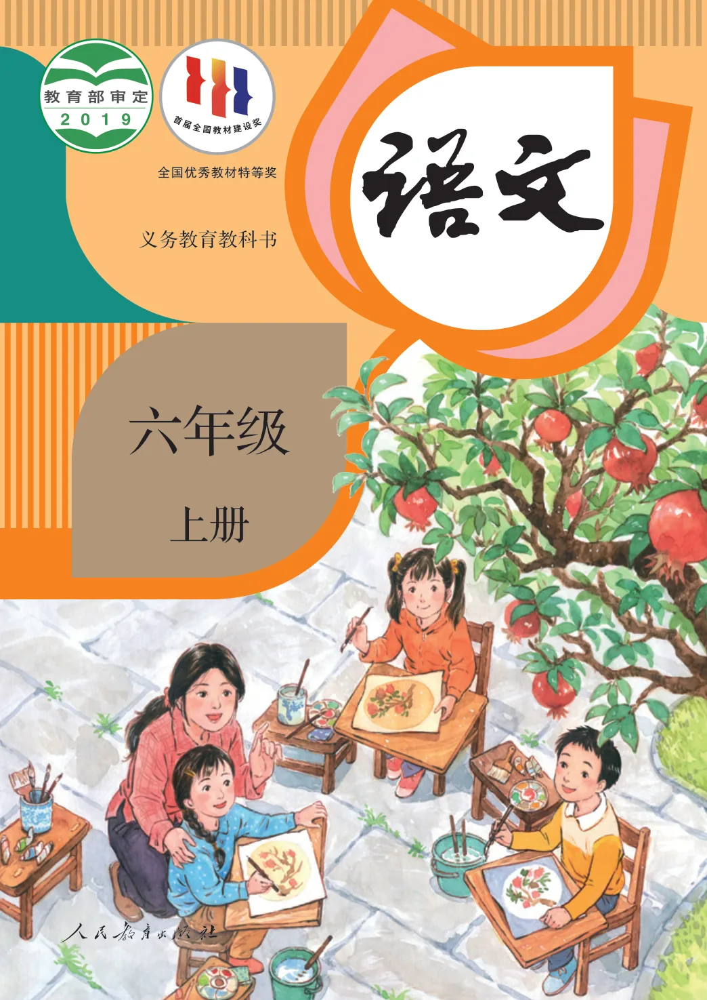
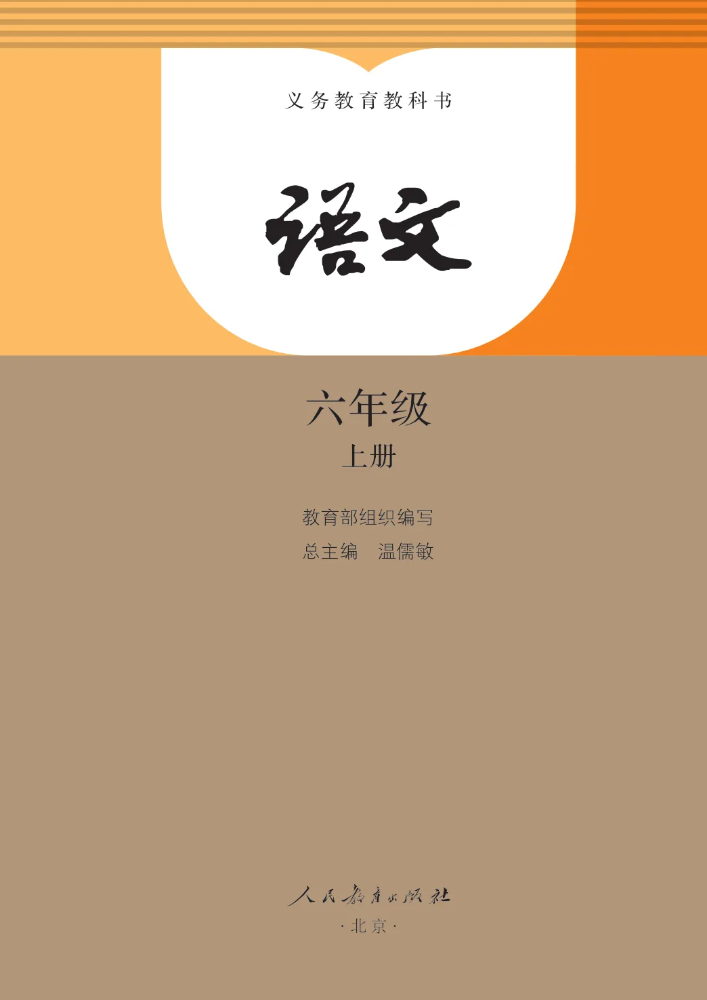
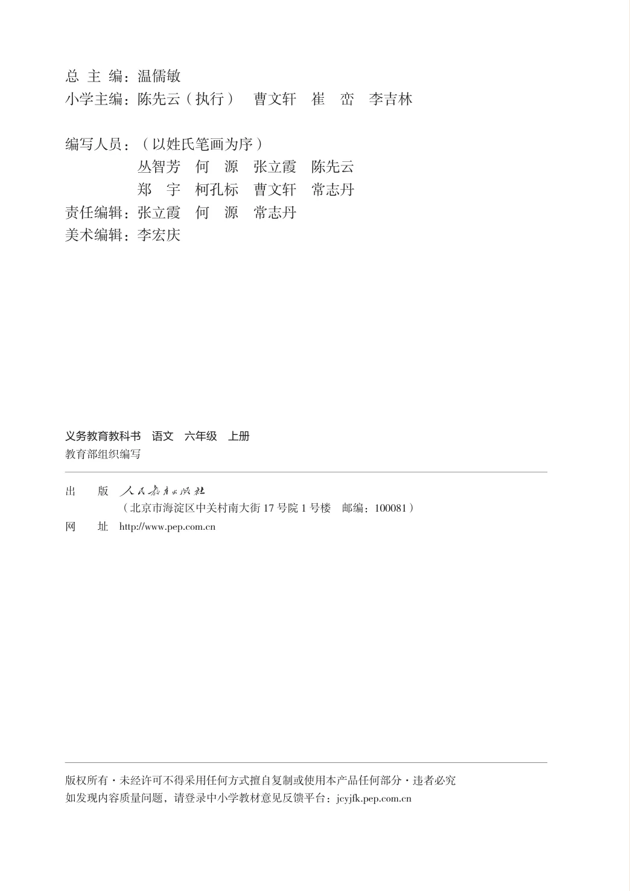
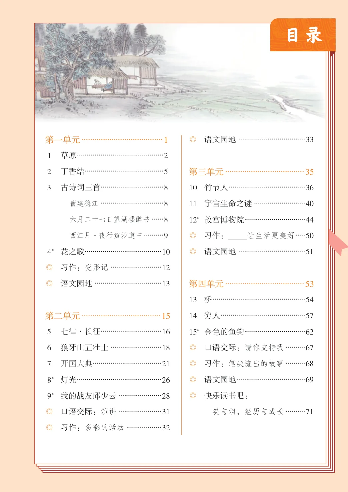
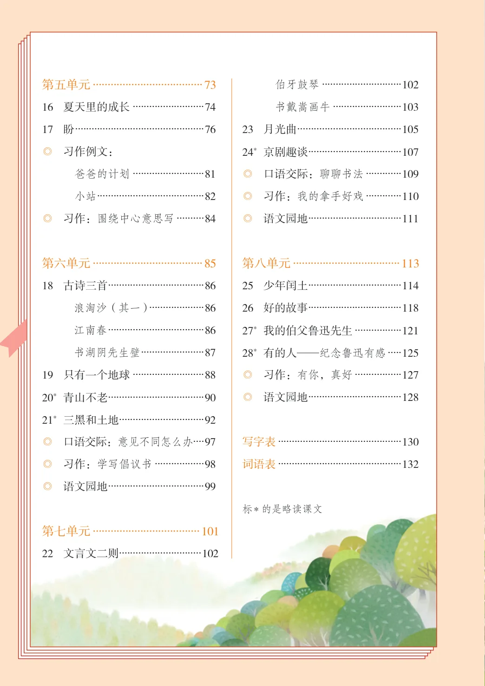
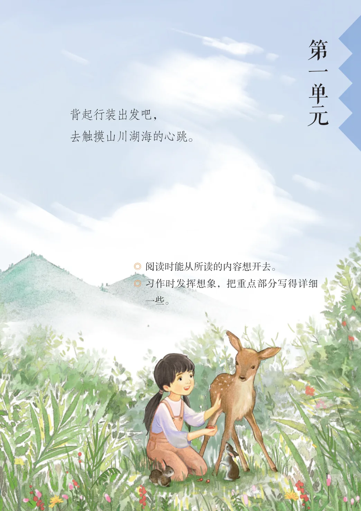
PDF 第 1 页文字内容
全国优秀教材特等奖
义务教育教科书
六年级
上册
PDF 第 2 页文字内容
义务教育教科书
六年级
上册
教育部组织编写
总主编 温儒敏
·北 京·
PDF 第 3 页文字内容
总 主 编：温儒敏
小学主编：陈先云（执行） 曹文轩 崔 峦 李吉林
编写人员：（以姓氏笔画为序）
丛智芳 何 源 张立霞 陈先云
郑 宇 柯孔标 曹文轩 常志丹
责任编辑：张立霞 何 源 常志丹
美术编辑：李宏庆
义务教育教科书 语文 六年级 上册
教育部组织编写
出版
（北京市海淀区中关村南大街 17 号院 1 号楼 邮编：100081）
址 http://www.pep.com.cn网
版权所有·未经许可不得采用任何方式擅自复制或使用本产品任何部分·违者必究
如发现内容质量问题，请登录中小学教材意见反馈平台：jcyjfk.pep.com.cn
PDF 第 4 页文字内容
目录
第一单元.......................................1◎ 语文园地 ..................................33
草原............................................2
丁香结........................................5第三单元......................................35
古诗词三首................................810 竹节人.......................................36
宿建德江.................................811 宇宙生命之谜...........................40
六月二十七日望湖楼醉书.......812* 故宫博物院...............................44
西江月·夜行黄沙道中...........9◎ 习作：让生活更美好.....50
◎ 语文园地 ..................................514* 花之歌.......................................10
◎ 习作：变形记...........................12
◎ 语文园地 ..................................13第四单元......................................53
13 桥...............................................54
第二单元......................................1514 穷人...........................................57
七律·长征...............................1615* 金色的鱼钩...............................62
狼牙山五壮士...........................18◎ 口语交际：请你支持我...........67
开国大典...................................21◎ 习作：笔尖流出的故事...........68
◎ 语文园地...................................698* 灯光...........................................26
9* 我的战友邱少云.......................28
◎ 快乐读书吧：
◎ 口语交际：演讲.......................31笑与泪，经历与成长...........71
◎ 习作：多彩的活动...................32
PDF 第 5 页文字内容
第五单元......................................73伯牙鼓琴..............................102
16 夏天里的成长...........................74书戴嵩画牛..........................103
17 盼...............................................7623 月光曲......................................105
24* 京剧趣谈..................................107
◎ 习作例文：
爸爸的计划...........................81◎ 口语交际：聊聊书法..............109
小站.......................................82◎ 习作：我的拿手好戏..............110
◎ 习作：围绕中心意思写...........84◎ 语文园地..................................111
第六单元......................................85第八单元.....................................113
18 古诗三首...................................8625 少年闰土..................................114
浪淘沙（其一）.....................8626 好的故事..................................118
江南春...................................8627* 我的伯父鲁迅先生..................121
书湖阴先生壁.......................8728* 有的人—纪念鲁迅有感......125
19 只有一个地球...........................88◎ 习作：有你，真好..................127
◎ 语文园地..................................12820* 青山不老...................................90
21* 三黑和土地...............................92
◎ 口语交际：意见不同怎么办....97写字表..............................................130
◎ 习作：学写倡议书...................98词语表..............................................132
◎ 语文园地...................................99
标* 的是略读课文
第七单元.....................................101
22 文言文二则..............................102
教材页 1文字内容
第一单元
背起行装出发吧，
去触摸山川湖海的心跳。
◎ 阅读时能从所读的内容想开去。
◎ 习作时发挥想象，把重点部分写得详细
一些。
PDF 17–20
习作
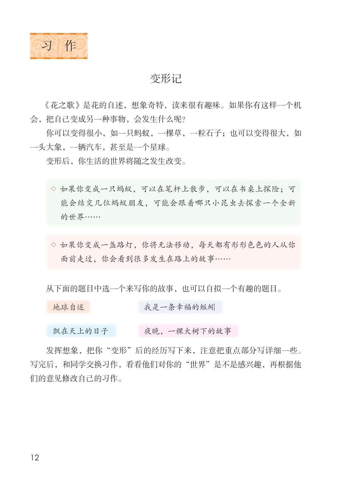
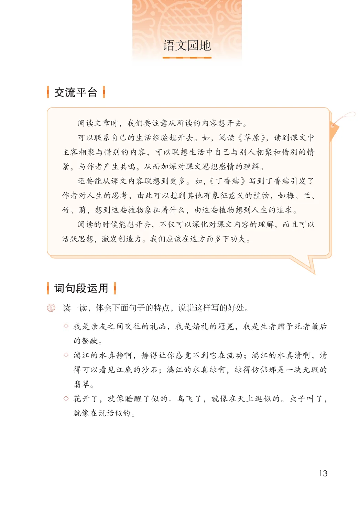
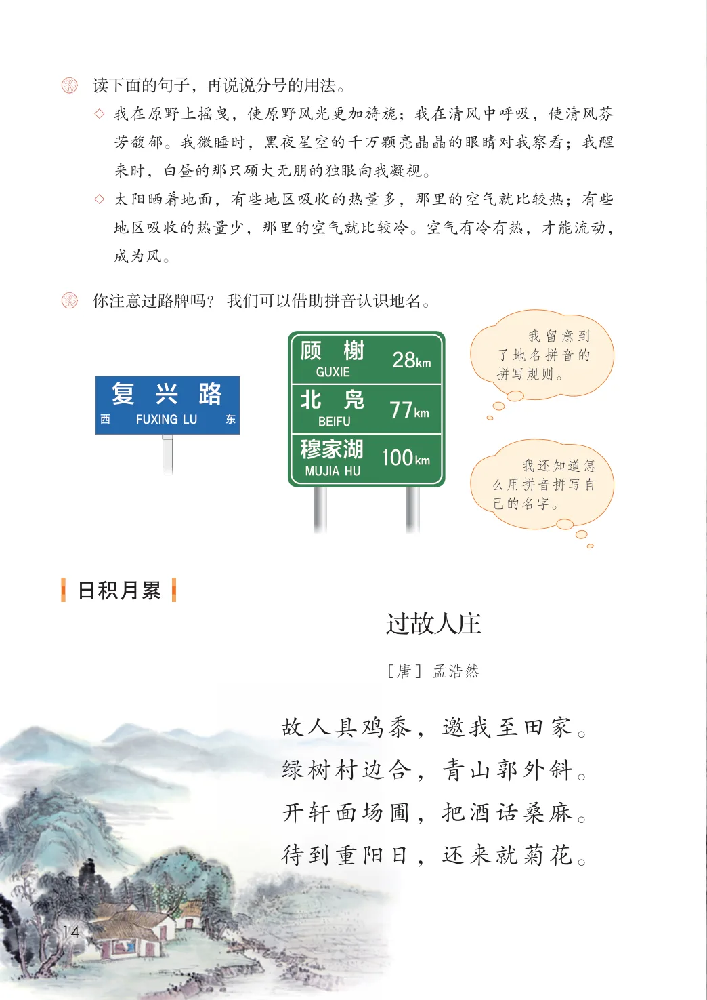
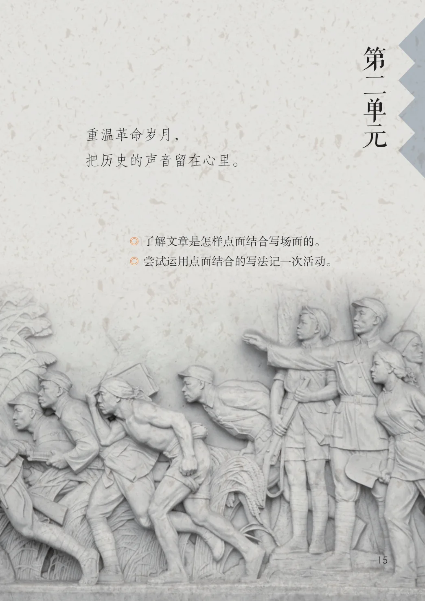
教材页 12文字内容
习 作
变形记
《花之歌》是花的自述，想象奇特，读来很有趣味。如果你有这样一个机
会，把自己变成另一种事物，会发生什么呢？
你可以变得很小，如一只蚂蚁，一棵草，一粒石子；也可以变得很大，如
一头大象，一辆汽车，甚至是一个星球。
变形后，你生活的世界将随之发生改变。
◇ 如果你变成一只蚂蚁，可以在笔杆上散步，可以在书桌上探险；可
能会结交几位蚂蚁朋友，可能会跟着哪只小昆虫去探索一个全新
的世界……
◇ 如果你变成一盏路灯，你将无法移动，每天都有形形色色的人从你
面前走过，你会看到很多发生在路上的故事……
从下面的题目中选一个来写你的故事，也可以自拟一个有趣的题目。
地球自述我是一条幸福的蚯蚓
飘在天上的日子夜晚，一棵大树下的故事
发挥想象，把你“变形”后的经历写下来，注意把重点部分写详细一些。
写完后，和同学交换习作，看看他们对你的“世界”是不是感兴趣，再根据他
们的意见修改自己的习作。
教材页 13文字内容
语文园地
交流平台
阅读文章时，我们要注意从所读的内容想开去。
可以联系自己的生活经验想开去。如，阅读《草原》，读到课文中
主客相聚与惜别的内容，可以联想生活中自己与别人相聚和惜别的情
景，与作者产生共鸣，从而加深对课文思想感情的理解。
还要能从课文内容联想到更多。如，《丁香结》写到丁香结引发了
作者对人生的思考，由此可以想到其他有象征意义的植物，如梅、兰、
竹、菊，想到这些植物象征着什么，由这些植物想到人生的追求。
阅读的时候能想开去，不仅可以深化对课文内容的理解，而且可以
活跃思想，激发创造力。我们应该在这方面多下功夫。
词句段运用
读一读，体会下面句子的特点，说说这样写的好处。
◇ 我是亲友之间交往的礼品，我是婚礼的冠冕，我是生者赠予死者最后
的祭献。
◇ 漓江的水真静啊，静得让你感觉不到它在流动；漓江的水真清啊，清
得可以看见江底的沙石；漓江的水真绿啊，绿得仿佛那是一块无瑕的
翡翠。
◇ 花开了，就像睡醒了似的。鸟飞了，就像在天上逛似的。虫子叫了，
就像在说话似的。
教材页 14文字内容
读下面的句子，再说说分号的用法。
◇ 我在原野上摇曳，使原野风光更加旖旎；我在清风中呼吸，使清风芬
芳馥郁。我微睡时，黑夜星空的千万颗亮晶晶的眼睛对我察看；我醒
来时，白昼的那只硕大无朋的独眼向我凝视。
◇ 太阳晒着地面，有些地区吸收的热量多，那里的空气就比较热；有些
地区吸收的热量少，那里的空气就比较冷。空气有冷有热，才能流动，
成为风。
你注意过路牌吗？ 我们可以借助拼音认识地名。
我留意到了地名拼音的拼写规则。
我还知道怎么用拼音拼写自己的名字。
日积月累
过故人庄
[唐] 孟浩然
故人具鸡黍，邀我至田家。
绿树村边合，青山郭外斜。
开轩面场圃，把酒话桑麻。
待到重阳日，还来就菊花。
教材页 15文字内容
第二单元
重温革命岁月，
把历史的声音留在心里。
◎ 了解文章是怎样点面结合写场面的。
◎ 尝试运用点面结合的写法记一次活动。
PDF 36–40
口语交际
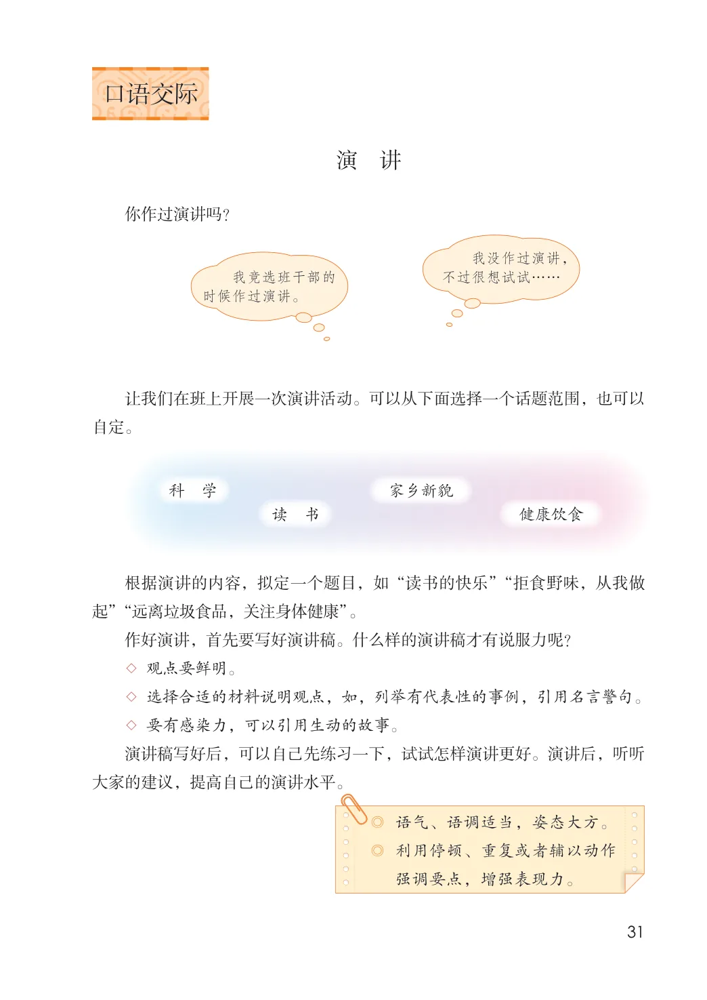
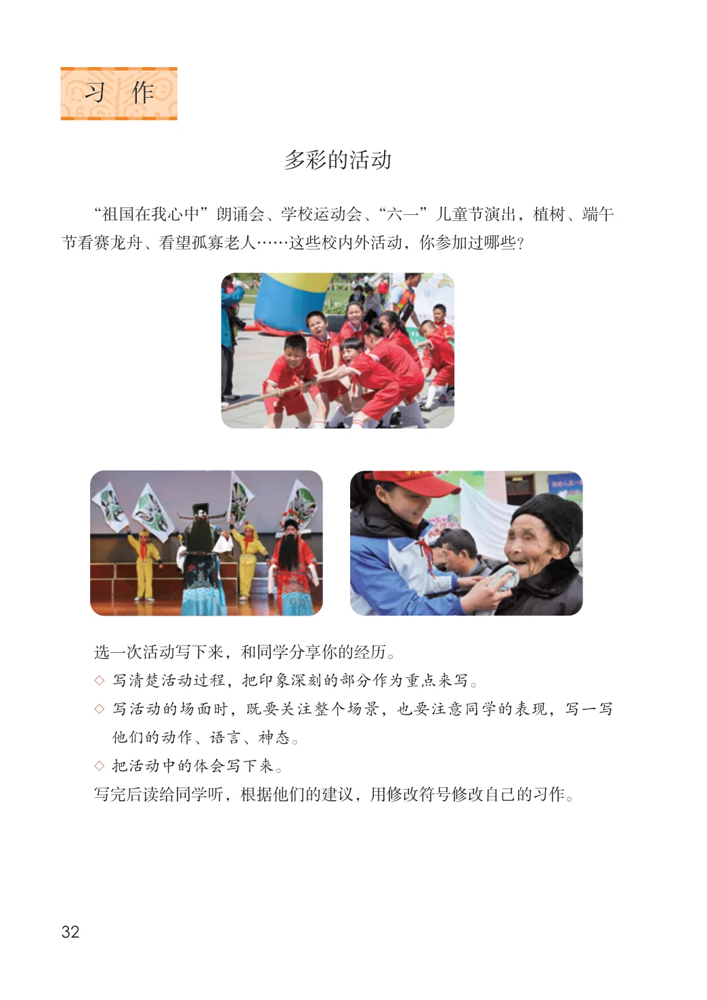
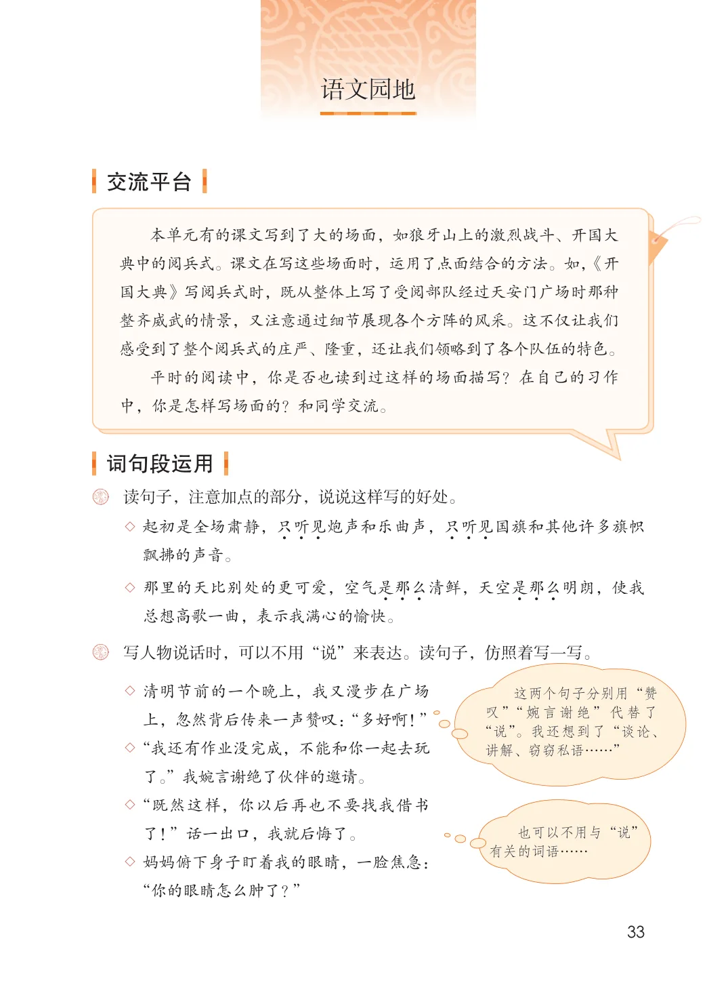
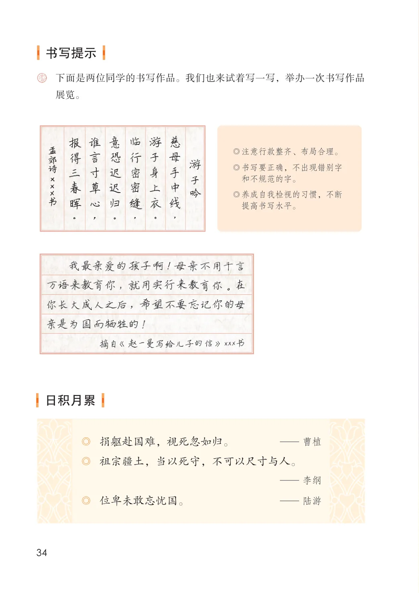
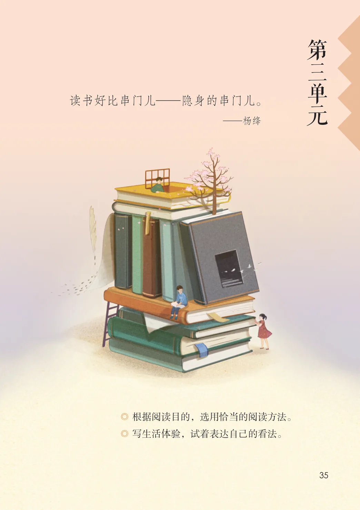
教材页 31文字内容
口语交际
演 讲
你作过演讲吗？
我没作过演讲，不过很想试试……我竞选班干部的时候作过演讲。
让我们在班上开展一次演讲活动。可以从下面选择一个话题范围，也可以
自定。
读 书科 学家乡新貌
健康饮食
根据演讲的内容，拟定一个题目，如“读书的快乐”“拒食野味，从我做
起”“远离垃圾食品，关注身体健康”。
作好演讲，首先要写好演讲稿。什么样的演讲稿才有说服力呢？
◇ 观点要鲜明。
◇ 选择合适的材料说明观点，如，列举有代表性的事例，引用名言警句。
◇ 要有感染力，可以引用生动的故事。
演讲稿写好后，可以自己先练习一下，试试怎样演讲更好。演讲后，听听
大家的建议，提高自己的演讲水平。
◎ 语气、语调适当，姿态大方。
◎ 利用停顿、重复或者辅以动作
强调要点，增强表现力。
教材页 32文字内容
习 作
多彩的活动
“祖国在我心中”朗诵会、学校运动会、“六一”儿童节演出，植树、端午
节看赛龙舟、看望孤寡老人……这些校内外活动，你参加过哪些？
选一次活动写下来，和同学分享你的经历。
◇ 写清楚活动过程，把印象深刻的部分作为重点来写。
◇ 写活动的场面时，既要关注整个场景，也要注意同学的表现，写一写
他们的动作、语言、神态。
◇ 把活动中的体会写下来。
写完后读给同学听，根据他们的建议，用修改符号修改自己的习作。
教材页 33文字内容
语文园地
交流平台
本单元有的课文写到了大的场面，如狼牙山上的激烈战斗、开国大
典中的阅兵式。课文在写这些场面时，运用了点面结合的方法。如，《开
国大典》写阅兵式时，既从整体上写了受阅部队经过天安门广场时那种
整齐威武的情景，又注意通过细节展现各个方阵的风采。这不仅让我们
感受到了整个阅兵式的庄严、隆重，还让我们领略到了各个队伍的特色。
平时的阅读中，你是否也读到过这样的场面描写？在自己的习作
中，你是怎样写场面的？和同学交流。
词句段运用
读句子，注意加点的部分，说说这样写的好处。
◇ 起初是全场肃静，只听见3 炮声和乐曲声，只听见3 国旗和其他许多旗帜
飘拂的声音。
◇ 那里的天比别处的更可爱，空气是那么3 清鲜，天空是那么3 明朗，使我
总想高歌一曲，表示我满心的愉快。
写人物说话时，可以不用“说”来表达。读句子，仿照着写一写。
◇ 清明节前的一个晚上，我又漫步在广场
这两个句子分别用“赞叹”“ 婉言谢绝” 代替了“说”。我还想到了“谈论、
上，忽然背后传来一声赞叹：“多好啊！”
◇ “我还有作业没完成，不能和你一起去玩
讲解、窃窃私语……”
了。”我婉言谢绝了伙伴的邀请。
◇ “既然这样，你以后再也不要找我借书
也可以不用与“说”有关的词语……了！”话一出口，我就后悔了。
◇ 妈妈俯下身子盯着我的眼睛，一脸焦急：
“你的眼睛怎么肿了？”
教材页 34文字内容
书写提示
下面是两位同学的书写作品。我们也来试着写一写，举办一次书写作品
展览。
◎ 注意行款整齐、布局合理。
◎ 书写要正确，不出现错别字和不规范的字。
◎ 养成自我检视的习惯，不断提高书写水平。
日积月累
◎ 捐躯赴国难，视死忽如归。— 曹植
◎ 祖宗疆土，当以死守，不可以尺寸与人。
— 李纲
◎ 位卑未敢忘忧国。— 陆游
教材页 35文字内容
第三单元
读书好比串门儿—隐身的串门儿。
—杨绛
◎ 根据阅读目的，选用恰当的阅读方法。
◎ 写生活体验，试着表达自己的看法。
PDF 55–58
习作
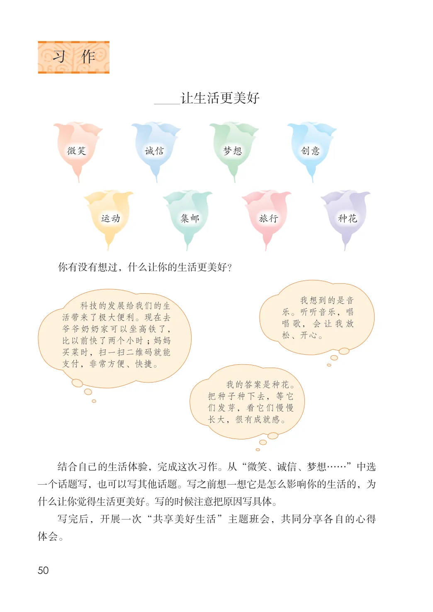
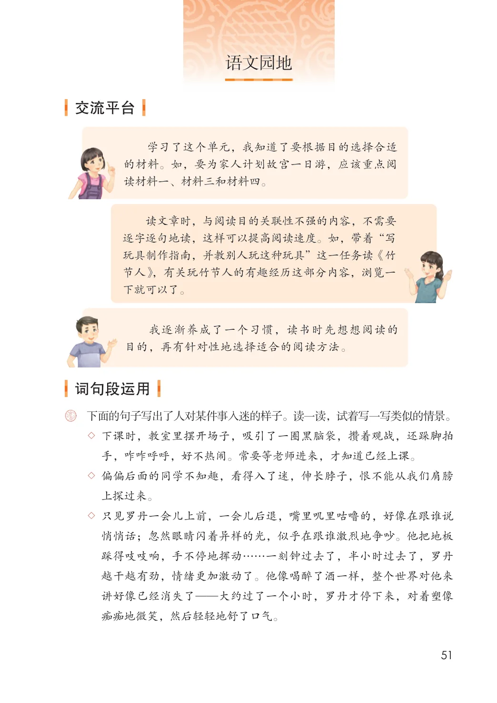
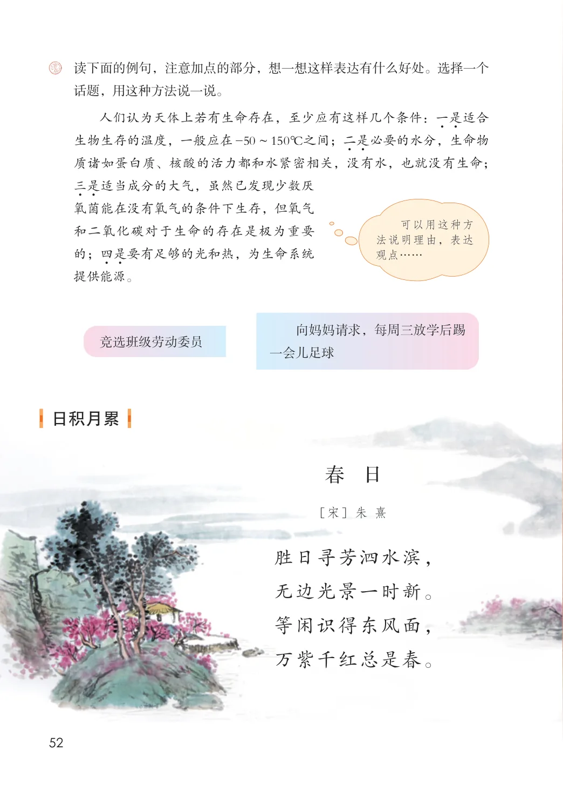
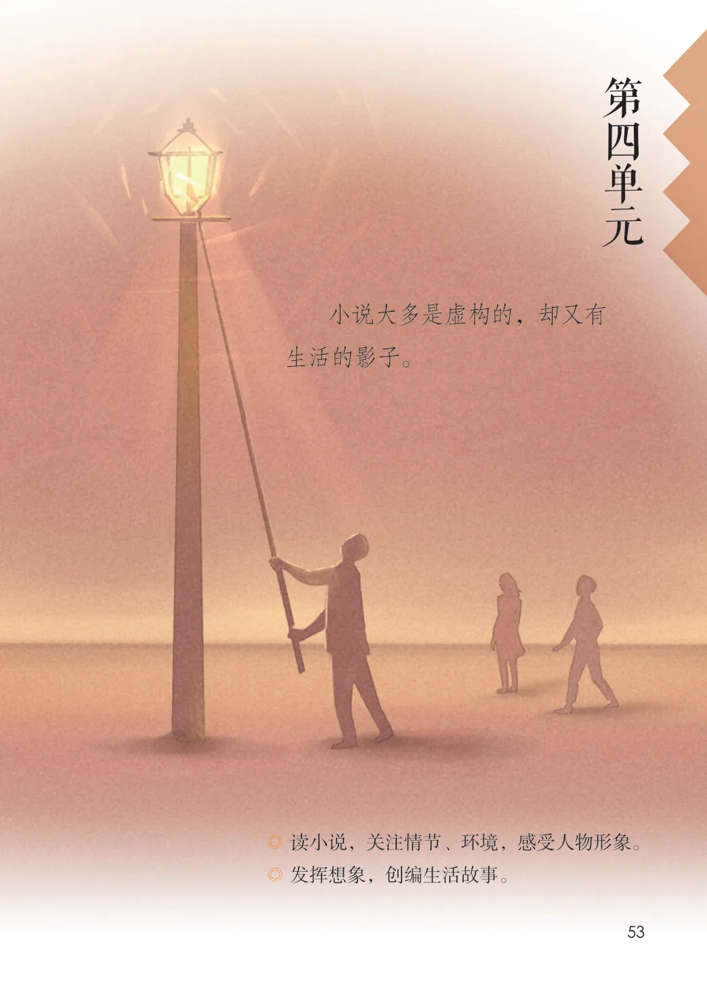
教材页 50文字内容
习 作
让生活更美好
微笑诚信梦想创意
种花旅行集邮运动
你有没有想过，什么让你的生活更美好？
我想到的是音乐。听听音乐，唱唱歌，会让我放松、开心。
科技的发展给我们的生活带来了极大便利。现在去爷爷奶奶家可以坐高铁了，比以前快了两个小时；妈妈买菜时，扫一扫二维码就能支付，非常方便、快捷。
我的答案是种花。把种子种下去，等它们发芽，看它们慢慢长大，很有成就感。
结合自己的生活体验，完成这次习作。从“微笑、诚信、梦想……”中选
一个话题写，也可以写其他话题。写之前想一想它是怎么影响你的生活的，为
什么让你觉得生活更美好。写的时候注意把原因写具体。
写完后，开展一次“共享美好生活”主题班会，共同分享各自的心得
体会。
教材页 51文字内容
语文园地
交流平台
学习了这个单元，我知道了要根据目的选择合适的材料。如，要为家人计划故宫一日游，应该重点阅读材料一、材料三和材料四。
读文章时，与阅读目的关联性不强的内容，不需要逐字逐句地读，这样可以提高阅读速度。如，带着“写玩具制作指南，并教别人玩这种玩具”这一任务读《竹节人》，有关玩竹节人的有趣经历这部分内容，浏览一下就可以了。
我逐渐养成了一个习惯，读书时先想想阅读的目的，再有针对性地选择适合的阅读方法。
词句段运用
下面的句子写出了人对某件事入迷的样子。读一读，试着写一写类似的情景。
◇ 下课时，教室里摆开场子，吸引了一圈黑脑袋，攒着观战，还跺脚拍
手，咋咋呼呼，好不热闹。常要等老师进来，才知道已经上课。
◇ 偏偏后面的同学不知趣，看得入了迷，伸长脖子，恨不能从我们肩膀
上探过来。
◇ 只见罗丹一会儿上前，一会儿后退，嘴里叽里咕噜的，好像在跟谁说
悄悄话；忽然眼睛闪着异样的光，似乎在跟谁激烈地争吵。他把地板
踩得吱吱响，手不停地挥动……一刻钟过去了，半小时过去了，罗丹
越干越有劲，情绪更加激动了。他像喝醉了酒一样，整个世界对他来
讲好像已经消失了——大约过了一个小时，罗丹才停下来，对着塑像
痴痴地微笑，然后轻轻地舒了口气。
教材页 52文字内容
读下面的例句，注意加点的部分，想一想这样表达有什么好处。选择一个
话题，用这种方法说一说。
人们认为天体上若有生命存在，至少应有这样几个条件：一是3 适合
生物生存的温度，一般应在-50～150℃之间；二是3 必要的水分，生命物
质诸如蛋白质、核酸的活力都和水紧密相关，没有水，也就没有生命；
三是3 适当成分的大气，虽然已发现少数厌
氧菌能在没有氧气的条件下生存，但氧气
可以用这种方法说明理由，表达观点……
和二氧化碳对于生命的存在是极为重要
的；四是3 要有足够的光和热，为生命系统
提供能源。
向妈妈请求，每周三放学后踢
竞选班级劳动委员
一会儿足球
日积月累
春 日
[宋] 朱熹
胜日寻芳泗水滨，
无边光景一时新。
我爱阅读等闲识得东风面，
万紫千红总是春。
教材页 53文字内容
第四单元
小说大多是虚构的，却又有
生活的影子。
◎ 读小说，关注情节、环境，感受人物形象。
◎ 发挥想象，创编生活故事。
PDF 72–78
口语交际
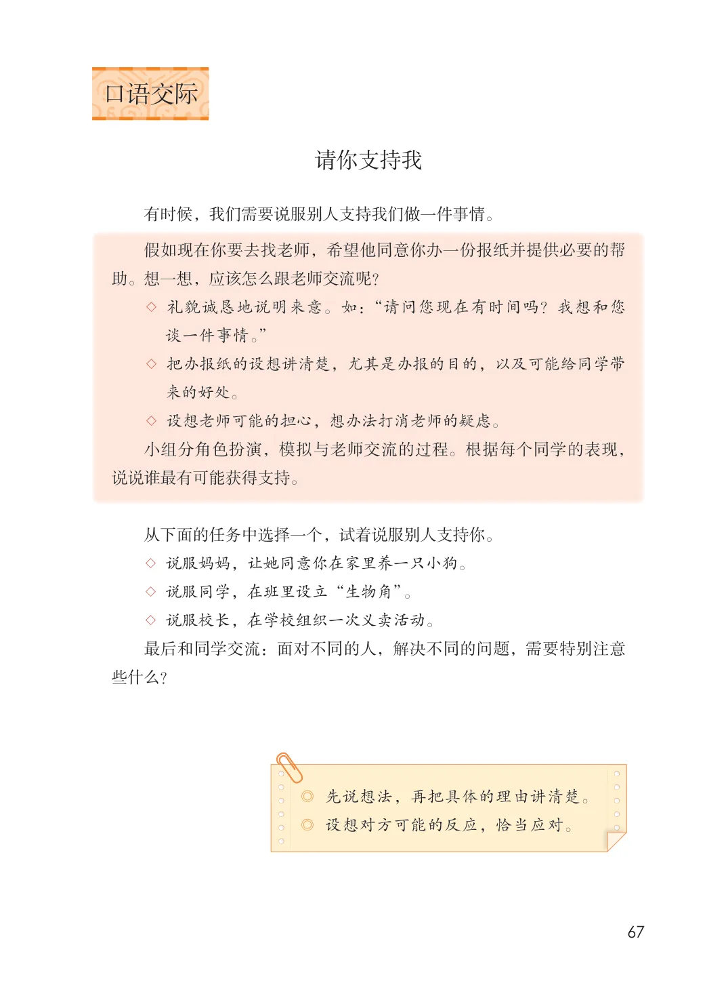
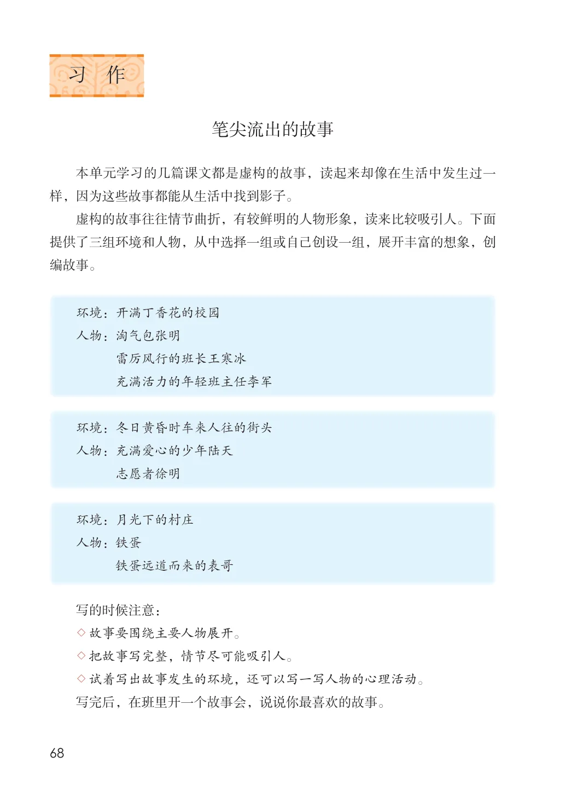
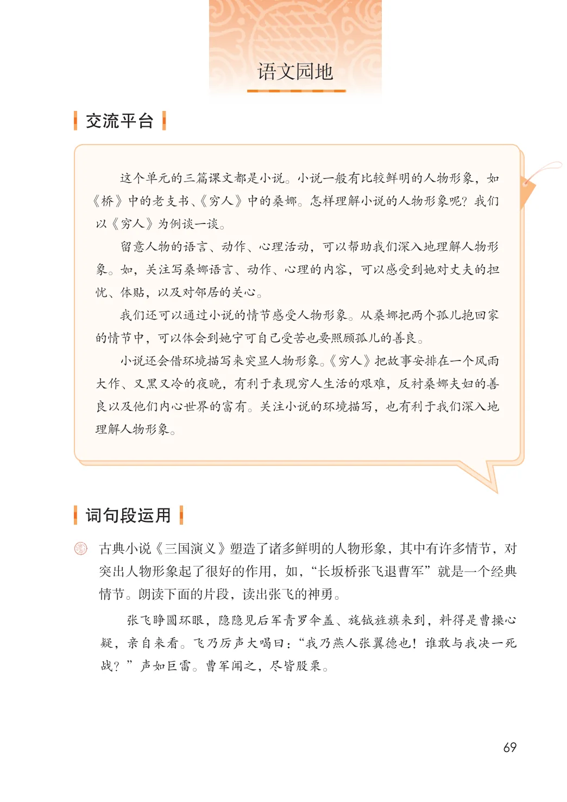
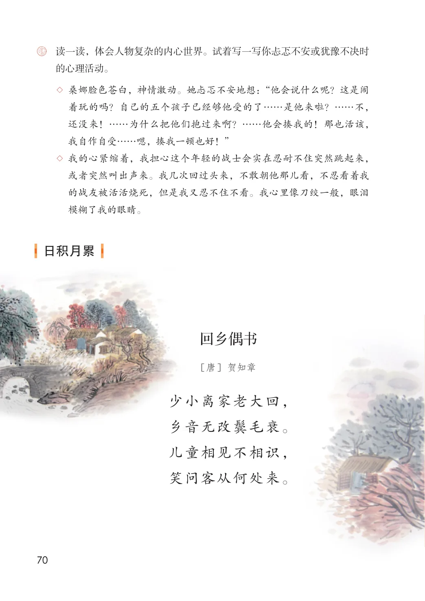
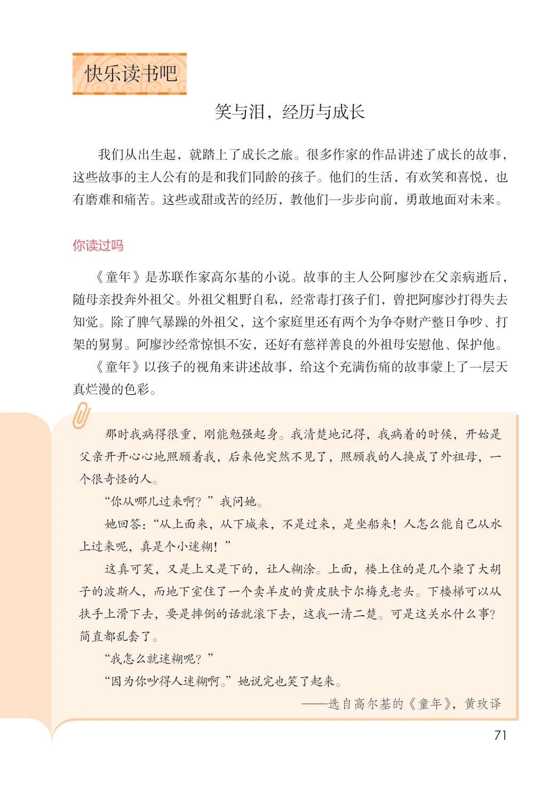
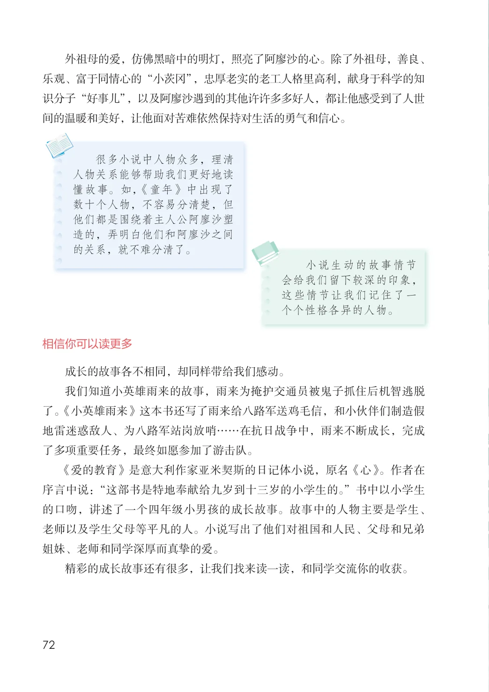
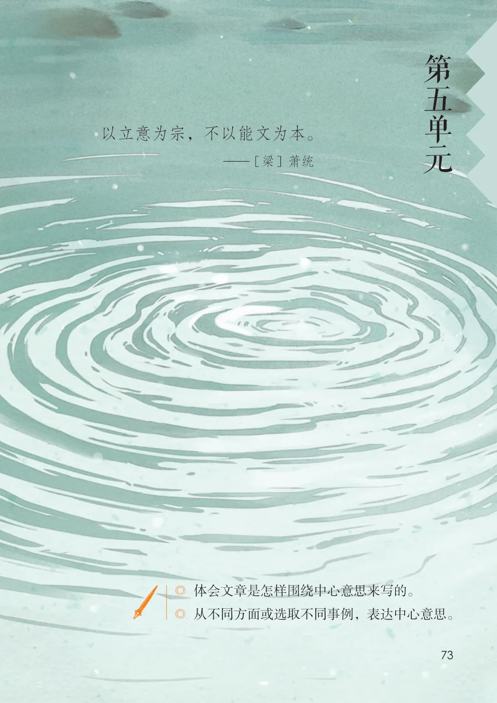
教材页 67文字内容
口语交际
请你支持我
有时候，我们需要说服别人支持我们做一件事情。
假如现在你要去找老师，希望他同意你办一份报纸并提供必要的帮
助。想一想，应该怎么跟老师交流呢？
◇ 礼貌诚恳地说明来意。如：“请问您现在有时间吗？我想和您
谈一件事情。”
◇ 把办报纸的设想讲清楚，尤其是办报的目的，以及可能给同学带
来的好处。
◇ 设想老师可能的担心，想办法打消老师的疑虑。
小组分角色扮演，模拟与老师交流的过程。根据每个同学的表现，
说说谁最有可能获得支持。
从下面的任务中选择一个，试着说服别人支持你。
◇ 说服妈妈，让她同意你在家里养一只小狗。
◇ 说服同学，在班里设立“生物角”。
◇ 说服校长，在学校组织一次义卖活动。
最后和同学交流：面对不同的人，解决不同的问题，需要特别注意
些什么？
◎ 先说想法，再把具体的理由讲清楚。
◎ 设想对方可能的反应，恰当应对。
教材页 68文字内容
习 作
笔尖流出的故事
本单元学习的几篇课文都是虚构的故事，读起来却像在生活中发生过一
样，因为这些故事都能从生活中找到影子。
虚构的故事往往情节曲折，有较鲜明的人物形象，读来比较吸引人。下面
提供了三组环境和人物，从中选择一组或自己创设一组，展开丰富的想象，创
编故事。
环境：开满丁香花的校园
人物： 淘气包张明
雷厉风行的班长王寒冰
充满活力的年轻班主任李军
环境： 冬日黄昏时车来人往的街头
人物： 充满爱心的少年陆天
志愿者徐明
环境： 月光下的村庄
人物： 铁蛋
铁蛋远道而来的表哥
写的时候注意：
◇ 故事要围绕主要人物展开。
◇ 把故事写完整，情节尽可能吸引人。
◇ 试着写出故事发生的环境，还可以写一写人物的心理活动。
写完后，在班里开一个故事会，说说你最喜欢的故事。
教材页 69文字内容
语文园地
交流平台
这个单元的三篇课文都是小说。小说一般有比较鲜明的人物形象，如
《桥》中的老支书、《穷人》中的桑娜。怎样理解小说的人物形象呢？我们
以《穷人》为例谈一谈。
留意人物的语言、动作、心理活动，可以帮助我们深入地理解人物形
象。如，关注写桑娜语言、动作、心理的内容，可以感受到她对丈夫的担
忧、体贴，以及对邻居的关心。
我们还可以通过小说的情节感受人物形象。从桑娜把两个孤儿抱回家
的情节中，可以体会到她宁可自己受苦也要照顾孤儿的善良。
小说还会借环境描写来突显人物形象。《穷人》把故事安排在一个风雨
大作、又黑又冷的夜晚，有利于表现穷人生活的艰难，反衬桑娜夫妇的善
良以及他们内心世界的富有。关注小说的环境描写，也有利于我们深入地
理解人物形象。
词句段运用
古典小说《三国演义》塑造了诸多鲜明的人物形象，其中有许多情节，对
突出人物形象起了很好的作用，如，“长坂桥张飞退曹军”就是一个经典
情节。朗读下面的片段，读出张飞的神勇。
张飞睁圆环眼，隐隐见后军青罗伞盖、旄钺旌旗来到，料得是曹操心
疑，亲自来看。飞乃厉声大喝曰：“我乃燕人张翼德也！谁敢与我决一死
战？”声如巨雷。曹军闻之，尽皆股栗。
教材页 70文字内容
读一读，体会人物复杂的内心世界。试着写一写你忐忑不安或犹豫不决时
的心理活动。
◇ 桑娜脸色苍白，神情激动。她忐忑不安地想：“他会说什么呢？这是闹
着玩的吗？自己的五个孩子已经够他受的了……是他来啦？……不，
还没来！……为什么把他们抱过来啊？……他会揍我的！那也活该，
我自作自受……嗯，揍我一顿也好！”
◇ 我的心紧缩着，我担心这个年轻的战士会实在忍耐不住突然跳起来，
或者突然叫出声来。我几次回过头来，不敢朝他那儿看，不忍看着我
的战友被活活烧死，但是我又忍不住不看。我心里像刀绞一般，眼泪
模糊了我的眼睛。
日积月累
回乡偶书
[唐] 贺知章
少小离家老大回，
乡音无改鬓毛衰。
儿童相见不相识，
笑问客从何处来。
教材页 71文字内容
快乐读书吧
笑与泪，经历与成长
我们从出生起，就踏上了成长之旅。很多作家的作品讲述了成长的故事，
这些故事的主人公有的是和我们同龄的孩子。他们的生活，有欢笑和喜悦，也
有磨难和痛苦。这些或甜或苦的经历，教他们一步步向前，勇敢地面对未来。
你读过吗
《童年》是苏联作家高尔基的小说。故事的主人公阿廖沙在父亲病逝后，
随母亲投奔外祖父。外祖父粗野自私，经常毒打孩子们，曾把阿廖沙打得失去
知觉。除了脾气暴躁的外祖父，这个家庭里还有两个为争夺财产整日争吵、打
架的舅舅。阿廖沙经常惊惧不安，还好有慈祥善良的外祖母安慰他、保护他。
《童年》以孩子的视角来讲述故事，给这个充满伤痛的故事蒙上了一层天
真烂漫的色彩。
那时我病得很重，刚能勉强起身。我清楚地记得，我病着的时候，开始是
父亲开开心心地照顾着我，后来他突然不见了，照顾我的人换成了外祖母，一
个很奇怪的人。
“你从哪儿过来啊？”我问她。
她回答：“从上面来，从下城来，不是过来，是坐船来！人怎么能自己从水
上过来呢，真是个小迷糊！”
这真可笑，又是上又是下的，让人糊涂。上面，楼上住的是几个染了大胡
子的波斯人，而地下室住了一个卖羊皮的黄皮肤卡尔梅克老头。下楼梯可以从
扶手上滑下去，要是摔倒的话就滚下去，这我一清二楚。可是这关水什么事？
简直都乱套了。
“我怎么就迷糊呢？”
“因为你吵得人迷糊啊。”她说完也笑了起来。
——选自高尔基的《童年》，黄玫译
教材页 72文字内容
外祖母的爱，仿佛黑暗中的明灯，照亮了阿廖沙的心。除了外祖母，善良、
乐观、富于同情心的“小茨冈”，忠厚老实的老工人格里高利，献身于科学的知
识分子“好事儿”，以及阿廖沙遇到的其他许许多多好人，都让他感受到了人世
间的温暖和美好，让他面对苦难依然保持对生活的勇气和信心。
很多小说中人物众多，理清人物关系能够帮助我们更好地读懂故事。如，《童年》中出现了数十个人物，不容易分清楚，但他们都是围绕着主人公阿廖沙塑造的，弄明白他们和阿廖沙之间的关系，就不难分清了。
小说生动的故事情节会给我们留下较深的印象，这些情节让我们记住了一个个性格各异的人物。
相信你可以读更多
成长的故事各不相同，却同样带给我们感动。
我们知道小英雄雨来的故事，雨来为掩护交通员被鬼子抓住后机智逃脱
了。《小英雄雨来》这本书还写了雨来给八路军送鸡毛信，和小伙伴们制造假
地雷迷惑敌人、为八路军站岗放哨……在抗日战争中，雨来不断成长，完成
了多项重要任务，最终如愿参加了游击队。
《爱的教育》是意大利作家亚米契斯的日记体小说，原名《心》。作者在
序言中说：“这部书是特地奉献给九岁到十三岁的小学生的。”书中以小学生
的口吻，讲述了一个四年级小男孩的成长故事。故事中的人物主要是学生、
老师以及学生父母等平凡的人。小说写出了他们对祖国和人民、父母和兄弟
姐妹、老师和同学深厚而真挚的爱。
精彩的成长故事还有很多，让我们找来读一读，和同学交流你的收获。
教材页 73文字内容
第五单元
以立意为宗，不以能文为本。
— [梁] 萧统
◎ 体会文章是怎样围绕中心意思来写的。
◎ 从不同方面或选取不同事例，表达中心意思。
PDF 86–90
习作
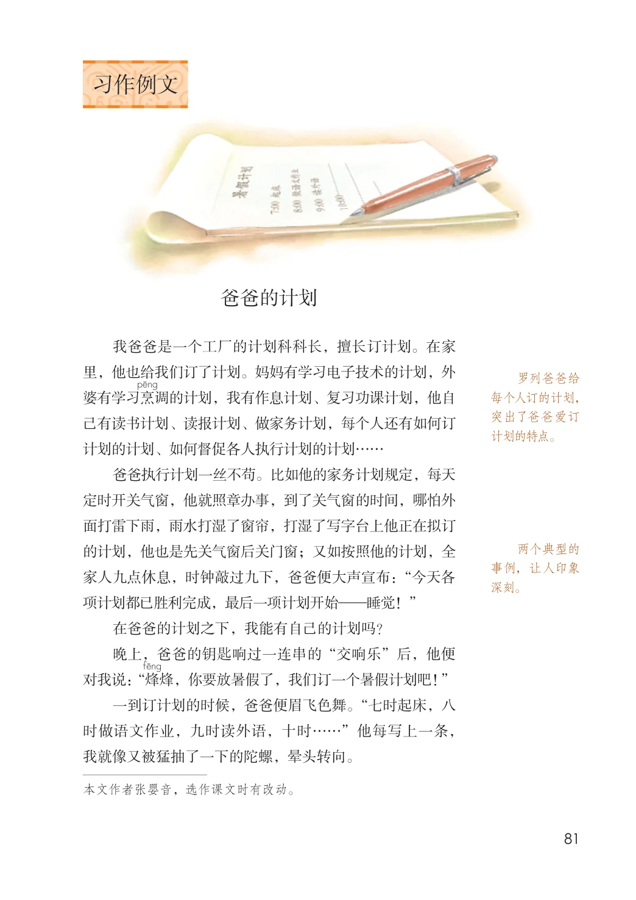
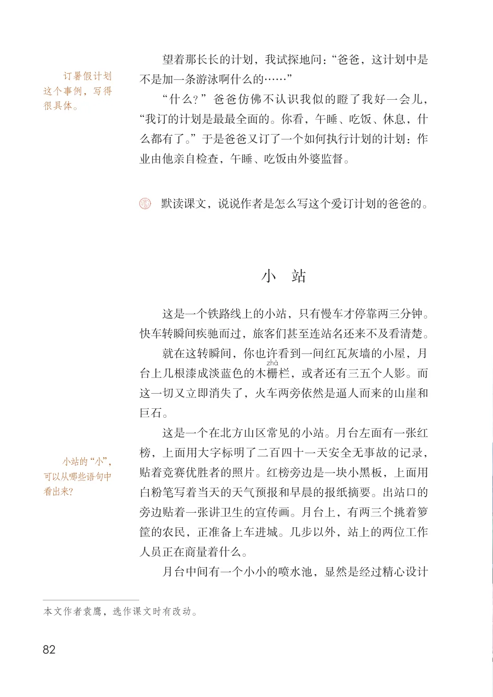
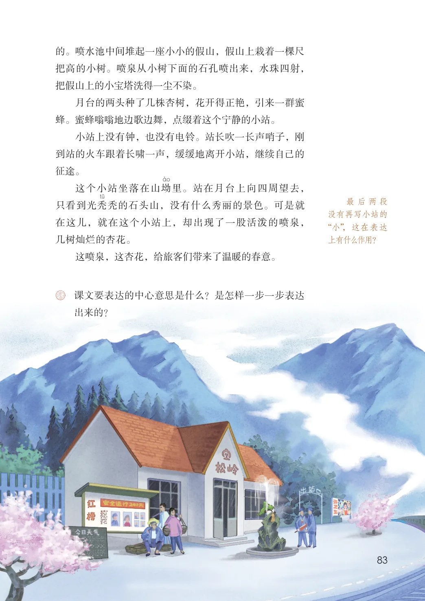
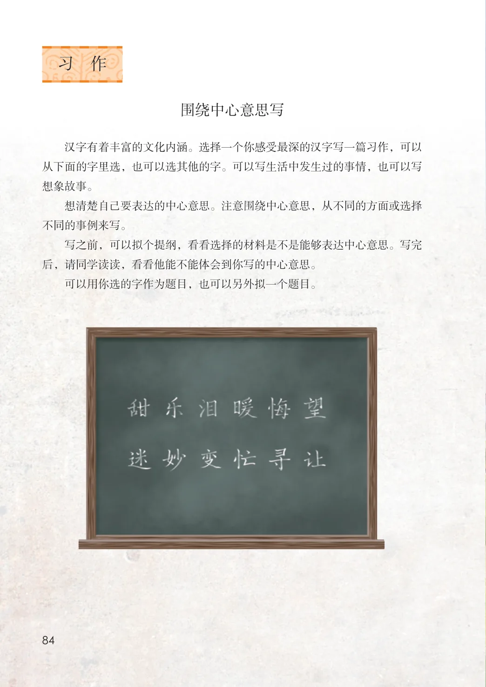
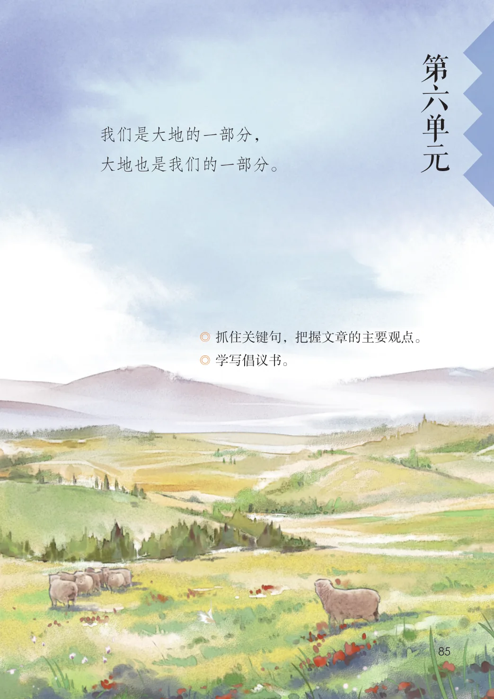
教材页 81文字内容
习作例文
爸爸的计划
我爸爸是一个工厂的计划科科长，擅长订计划。在家
里，他也给我们订了计划。妈妈有学习电子技术的计划，外
罗列爸爸给每个人订的计划，突出了爸爸爱订计划的特点。
婆有学习烹调的计划，我有作息计划、复习功课计划，他自
己有读书计划、读报计划、做家务计划，每个人还有如何订
计划的计划、如何督促各人执行计划的计划……
爸爸执行计划一丝不苟。比如他的家务计划规定，每天
定时开关气窗，他就照章办事，到了关气窗的时间，哪怕外
面打雷下雨，雨水打湿了窗帘，打湿了写字台上他正在拟订
两个典型的事例，让人印象深刻。的计划，他也是先关气窗后关门窗；又如按照他的计划，全
家人九点休息，时钟敲过九下，爸爸便大声宣布：“今天各
项计划都已胜利完成，最后一项计划开始——睡觉！”
在爸爸的计划之下，我能有自己的计划吗？
晚上，爸爸的钥匙响过一连串的“交响乐”后，他便
对我说：“烽烽，你要放暑假了，我们订一个暑假计划吧！”
一到订计划的时候，爸爸便眉飞色舞。“七时起床，八
时做语文作业，九时读外语，十时……”他每写上一条，
我就像又被猛抽了一下的陀螺，晕头转向。
本文作者张婴音，选作课文时有改动。
教材页 82文字内容
望着那长长的计划，我试探地问：“爸爸，这计划中是
订暑假计划这个事例，写得很具体。
不是加一条游泳啊什么的……”
“什么？”爸爸仿佛不认识我似的瞪了我好一会儿，
“我订的计划是最最全面的。你看，午睡、吃饭、休息，什
么都有了。”于是爸爸又订了一个如何执行计划的计划：作
业由他亲自检查，午睡、吃饭由外婆监督。
默读课文，说说作者是怎么写这个爱订计划的爸爸的。
小 站
这是一个铁路线上的小站，只有慢车才停靠两三分钟。
快车转瞬间疾驰而过，旅客们甚至连站名还来不及看清楚。
就在这转瞬间，你也许看到一间红瓦灰墙的小屋，月
台上几根漆成淡蓝色的木栅栏，或者还有三五个人影。而
这一切又立即消失了，火车两旁依然是逼人而来的山崖和
巨石。
这是一个在北方山区常见的小站。月台左面有一张红
榜，上面用大字标明了二百四十一天安全无事故的记录，
小站的“小”，可以从哪些语句中
贴着竞赛优胜者的照片。红榜旁边是一块小黑板，上面用
看出来？白粉笔写着当天的天气预报和早晨的报纸摘要。出站口的
旁边贴着一张讲卫生的宣传画。月台上，有两三个挑着箩
筐的农民，正准备上车进城。几步以外，站上的两位工作
人员正在商量着什么。
月台中间有一个小小的喷水池，显然是经过精心设计
本文作者袁鹰，选作课文时有改动。
教材页 83文字内容
的。喷水池中间堆起一座小小的假山，假山上栽着一棵尺
把高的小树。喷泉从小树下面的石孔喷出来，水珠四射，
把假山上的小宝塔洗得一尘不染。
月台的两头种了几株杏树，花开得正艳，引来一群蜜
蜂。蜜蜂嗡嗡地边歌边舞，点缀着这个宁静的小站。
小站上没有钟，也没有电铃。站长吹一长声哨子，刚
到站的火车跟着长啸一声，缓缓地离开小站，继续自己的
征途。
这个小站坐落在山坳里。站在月台上向四周望去，
最后两段没有再写小站的“小”，这在表达
只看到光秃秃的石头山，没有什么秀丽的景色。可是就
在这儿，就在这个小站上，却出现了一股活泼的喷泉，
几树灿烂的杏花。上有什么作用？
这喷泉，这杏花，给旅客们带来了温暖的春意。
课文要表达的中心意思是什么？是怎样一步一步表达
出来的？
教材页 84文字内容
习 作
围绕中心意思写
汉字有着丰富的文化内涵。选择一个你感受最深的汉字写一篇习作，可以
从下面的字里选，也可以选其他的字。可以写生活中发生过的事情，也可以写
想象故事。
想清楚自己要表达的中心意思。注意围绕中心意思，从不同的方面或选择
不同的事例来写。
写之前，可以拟个提纲，看看选择的材料是不是能够表达中心意思。写完
后，请同学读读，看看他能不能体会到你写的中心意思。
可以用你选的字作为题目，也可以另外拟一个题目。
教材页 85文字内容
第六单元
我们是大地的一部分，
大地也是我们的一部分。
◎ 抓住关键句，把握文章的主要观点。
◎ 学写倡议书。
PDF 102–106
口语交际
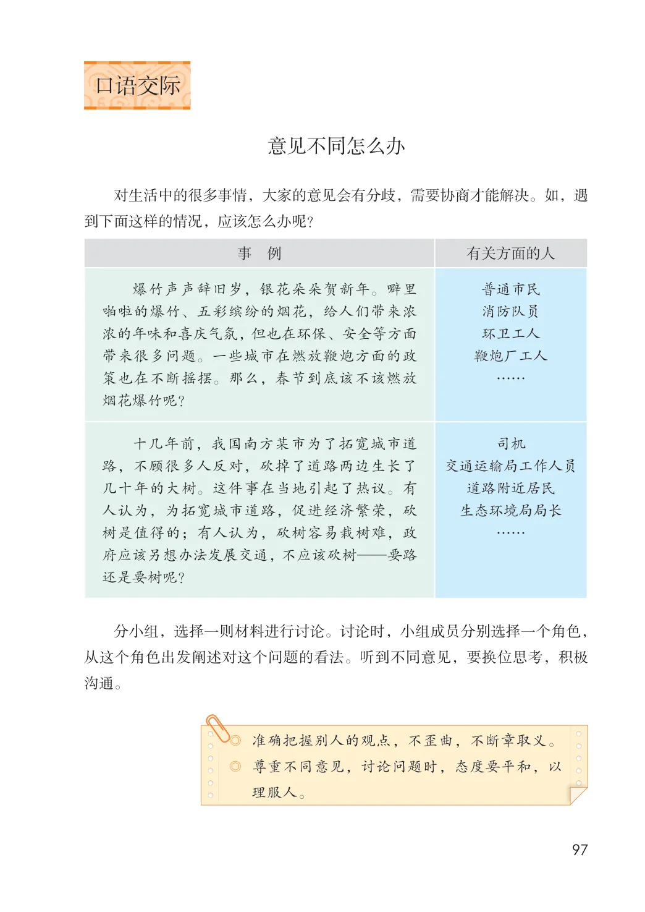
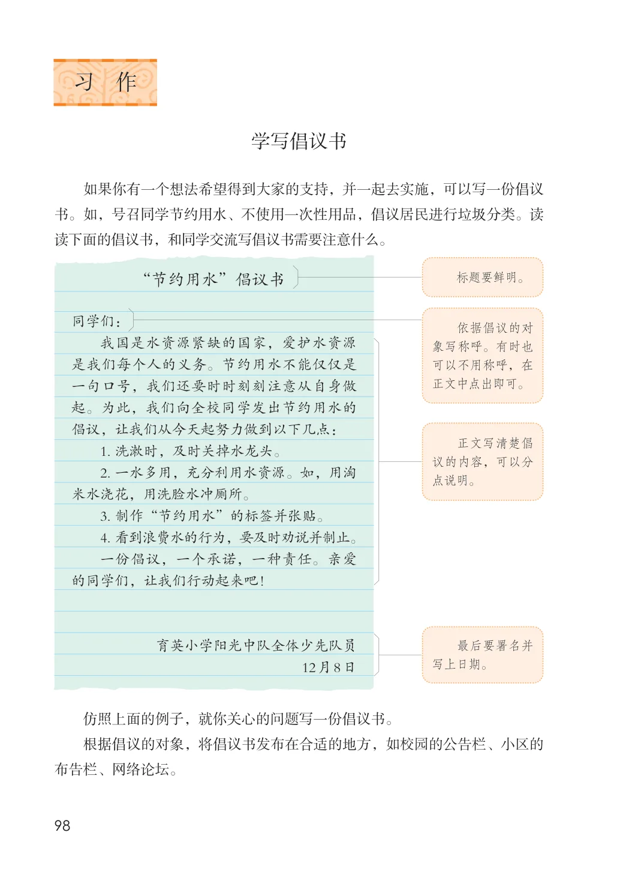
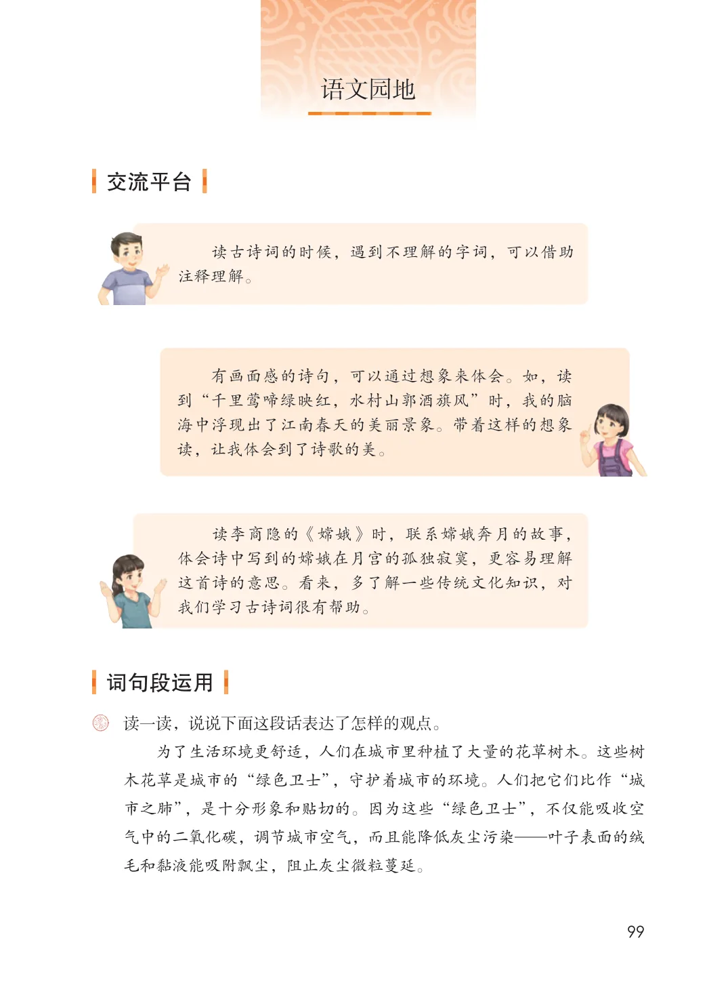
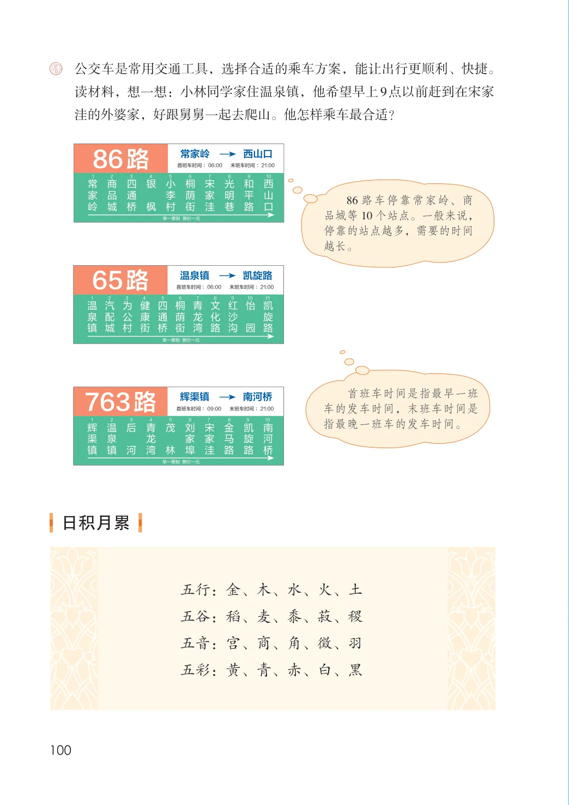
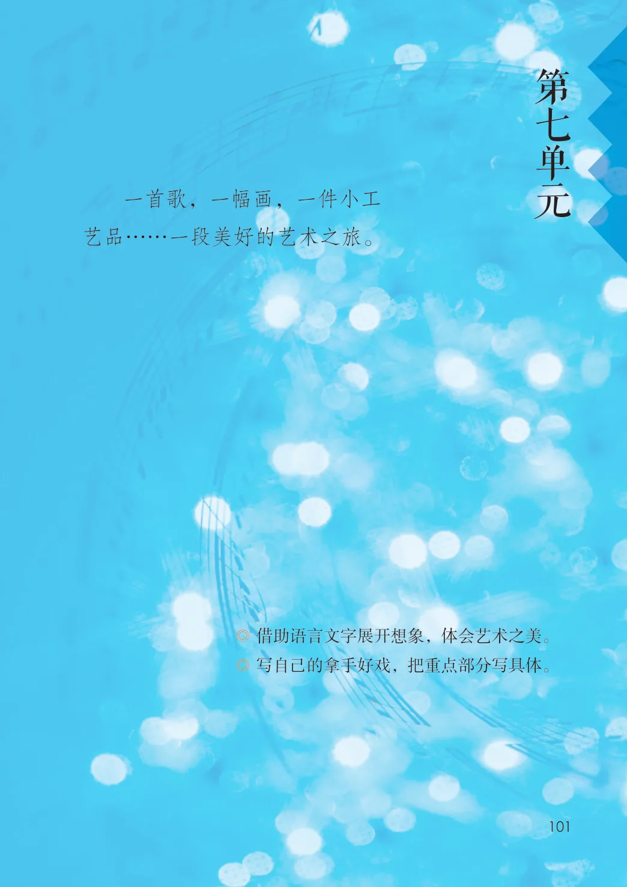
教材页 97文字内容
口语交际
意见不同怎么办
对生活中的很多事情，大家的意见会有分歧，需要协商才能解决。如，遇
到下面这样的情况，应该怎么办呢？
事 例有关方面的人
爆竹声声辞旧岁，银花朵朵贺新年。噼里啪啦的爆竹、五彩缤纷的烟花，给人们带来浓浓的年味和喜庆气氛， 但也在环保、安全等方面带来很多问题。一些城市在燃放鞭炮方面的政策也在不断摇摆。那么，春节到底该不该燃放烟花爆竹呢？普通市民消防队员环卫工人鞭炮厂工人
……
十几年前，我国南方某市为了拓宽城市道路，不顾很多人反对，砍掉了道路两边生长了几十年的大树。这件事在当地引起了热议。有人认为，为拓宽城市道路，促进经济繁荣，砍树是值得的；有人认为，砍树容易栽树难，政府应该另想办法发展交通， 不应该砍树—要路还是要树呢？司机交通运输局工作人员
道路附近居民生态环境局局长
……
分小组，选择一则材料进行讨论。讨论时，小组成员分别选择一个角色，
从这个角色出发阐述对这个问题的看法。听到不同意见，要换位思考，积极
沟通。
◎ 准确把握别人的观点，不歪曲，不断章取义。
◎ 尊重不同意见，讨论问题时，态度要平和，以
理服人。
教材页 98文字内容
习 作
学写倡议书
如果你有一个想法希望得到大家的支持，并一起去实施，可以写一份倡议
书。如，号召同学节约用水、不使用一次性用品，倡议居民进行垃圾分类。读
读下面的倡议书，和同学交流写倡议书需要注意什么。
标题要鲜明。“节约用水”倡议书
同学们：
依据倡议的对象写称呼。有时也可以不用称呼， 在正文中点出即可。
我国是水资源紧缺的国家，爱护水资源是我们每个人的义务。节约用水不能仅仅是一句口号，我们还要时时刻刻注意从自身做起。为此，我们向全校同学发出节约用水的倡议，让我们从今天起努力做到以下几点：
正文写清楚倡议的内容，可以分点说明。
1. 洗漱时，及时关掉水龙头。2. 一水多用，充分利用水资源。如，用淘米水浇花，用洗脸水冲厕所。
3. 制作“节约用水”的标签并张贴。4. 看到浪费水的行为，要及时劝说并制止。一份倡议，一个承诺，一种责任。亲爱的同学们，让我们行动起来吧!
育英小学阳光中队全体少先队员最后要署名并写上日期。
12月8日
仿照上面的例子，就你关心的问题写一份倡议书。
根据倡议的对象，将倡议书发布在合适的地方，如校园的公告栏、小区的
布告栏、网络论坛。
教材页 99文字内容
语文园地
交流平台
读古诗词的时候，遇到不理解的字词，可以借助注释理解。
有画面感的诗句，可以通过想象来体会。如，读到“千里莺啼绿映红，水村山郭酒旗风”时，我的脑海中浮现出了江南春天的美丽景象。带着这样的想象读，让我体会到了诗歌的美。
读李商隐的《嫦娥》时，联系嫦娥奔月的故事，体会诗中写到的嫦娥在月宫的孤独寂寞，更容易理解这首诗的意思。看来，多了解一些传统文化知识，对我们学习古诗词很有帮助。
词句段运用
读一读，说说下面这段话表达了怎样的观点。
为了生活环境更舒适，人们在城市里种植了大量的花草树木。这些树
木花草是城市的“绿色卫士”，守护着城市的环境。人们把它们比作“城
市之肺”，是十分形象和贴切的。因为这些“绿色卫士”，不仅能吸收空
气中的二氧化碳，调节城市空气，而且能降低灰尘污染——叶子表面的绒
毛和黏液能吸附飘尘，阻止灰尘微粒蔓延。
教材页 100文字内容
公交车是常用交通工具，选择合适的乘车方案，能让出行更顺利、快捷。
读材料，想一想：小林同学家住温泉镇，他希望早上9点以前赶到在宋家
洼的外婆家，好跟舅舅一起去爬山。他怎样乘车最合适？
首班车时间： 06:00 末班车时间： 21:0086路
常家岭西山口
常家岭商品城四通桥银小李村桐荫街宋家洼光明巷和平路西山口
86 路车停靠常家岭、商品城等10 个站点。一般来说，停靠的站点越多，需要的时间越长。
枫
单一票制 票价一元
首班车时间： 06:00 末班车时间： 21:0065路
温泉镇凯旋路
温泉镇汽配城为公村健康街四通桥桐荫街青龙湾文化路红沙沟怡凯旋路
园
单一票制 票价一元
首班车时间是指最早一班车的发车时间，末班车时间是指最晚一班车的发车时间。
首班车时间： 09:00 末班车时间： 21:00763路
辉渠镇南河桥
辉渠镇温泉镇后青龙湾茂刘家埠宋家洼金马路凯旋路南河桥
河林
单一票制 票价一元
日积月累
五行：金、木、水、火、土
五谷：稻、麦、黍、菽、稷
五音：宫、商、角、徵、羽
五彩：黄、青、赤、白、黑
教材页 101文字内容
第七单元
一首歌，一幅画，一件小工
艺品……一段美好的艺术之旅。
◎ 借助语言文字展开想象，体会艺术之美。
◎ 写自己的拿手好戏，把重点部分写具体。
PDF 114–118
口语交际
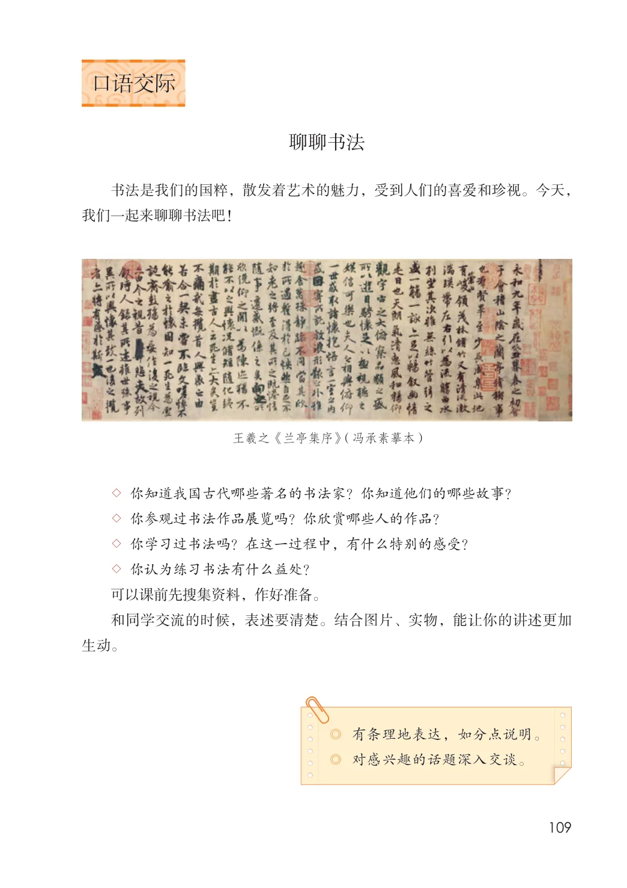
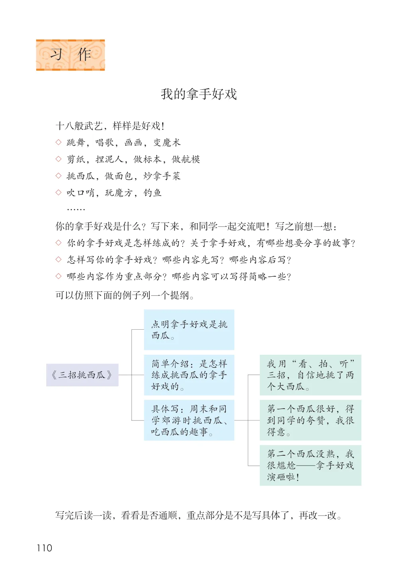
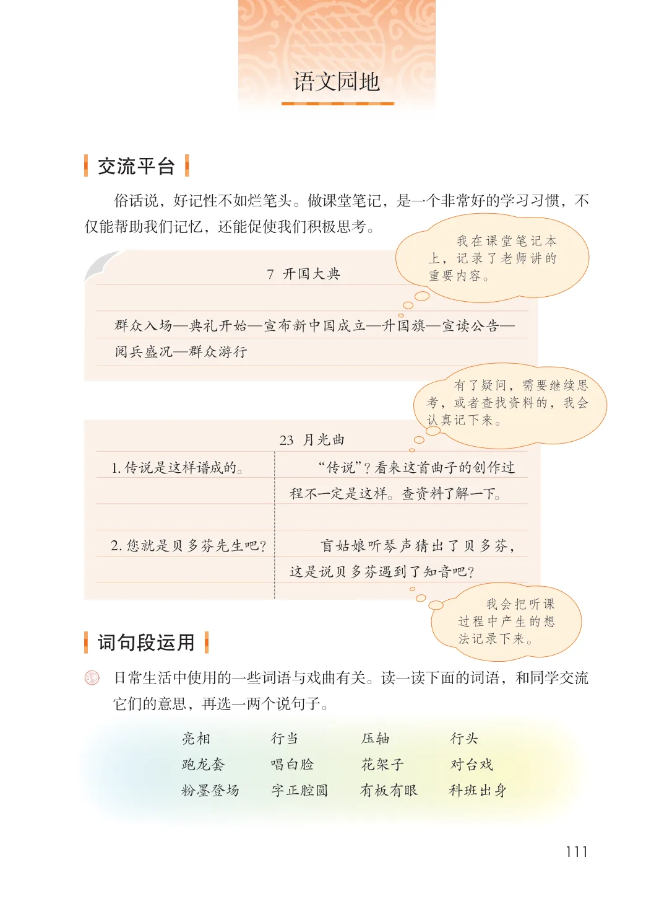
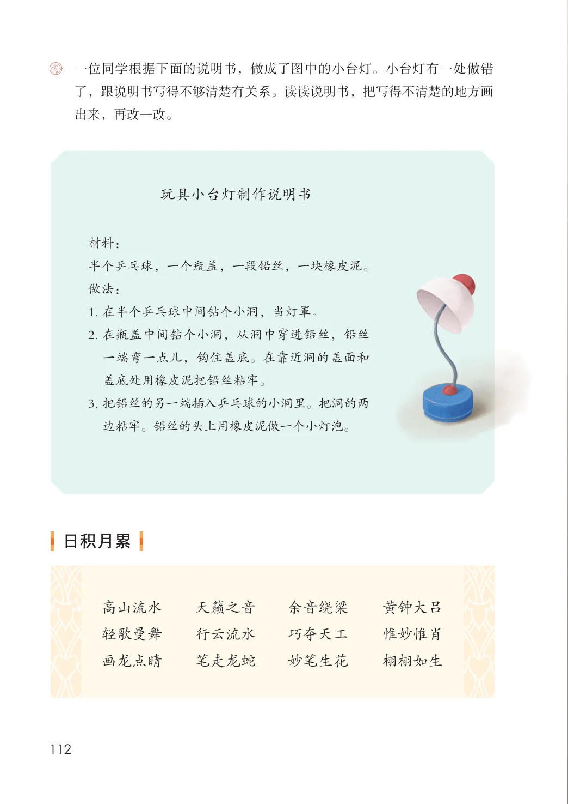
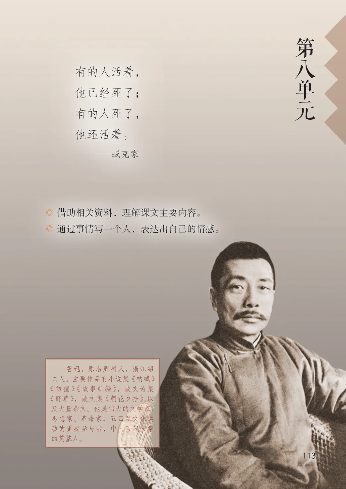
教材页 109文字内容
口语交际
聊聊书法
书法是我们的国粹，散发着艺术的魅力，受到人们的喜爱和珍视。今天，
我们一起来聊聊书法吧！
王羲之《兰亭集序》（冯承素摹本）
◇ 你知道我国古代哪些著名的书法家？你知道他们的哪些故事？
◇ 你参观过书法作品展览吗？你欣赏哪些人的作品？
◇ 你学习过书法吗？在这一过程中，有什么特别的感受？
◇ 你认为练习书法有什么益处？
可以课前先搜集资料，作好准备。
和同学交流的时候，表述要清楚。结合图片、实物，能让你的讲述更加
生动。
◎ 有条理地表达，如分点说明。
◎ 对感兴趣的话题深入交谈。
教材页 110文字内容
习 作
我的拿手好戏
十八般武艺，样样是好戏！
◇ 跳舞，唱歌，画画，变魔术
◇ 剪纸，捏泥人，做标本，做航模
◇ 挑西瓜，做面包，炒拿手菜
◇ 吹口哨，玩魔方，钓鱼
……
你的拿手好戏是什么？写下来，和同学一起交流吧！写之前想一想：
◇ 你的拿手好戏是怎样练成的？关于拿手好戏，有哪些想要分享的故事？
◇ 怎样写你的拿手好戏？哪些内容先写？哪些内容后写？
◇ 哪些内容作为重点部分？哪些内容可以写得简略一些？
可以仿照下面的例子列一个提纲。
点明拿手好戏是挑西瓜。
简单介绍：是怎样练成挑西瓜的拿手好戏的。我用“看、拍、听”三招，自信地挑了两个大西瓜。
《三招挑西瓜》
具体写：周末和同学郊游时挑西瓜、吃西瓜的趣事。第一个西瓜很好，得到同学的夸赞，我很得意。
第二个西瓜没熟，我很尴尬—拿手好戏演砸啦！
写完后读一读，看看是否通顺，重点部分是不是写具体了，再改一改。
教材页 111文字内容
语文园地
交流平台
俗话说，好记性不如烂笔头。做课堂笔记，是一个非常好的学习习惯，不
仅能帮助我们记忆，还能促使我们积极思考。
我在课堂笔记本上，记录了老师讲的重要内容。
7 开国大典
群众入场—典礼开始—宣布新中国成立—升国旗—宣读公告—
阅兵盛况—群众游行
有了疑问，需要继续思考，或者查找资料的，我会认真记下来。
23 月光曲
1. 传说是这样谱成的。
“传说”？看来这首曲子的创作过
程不一定是这样。查资料了解一下。
2. 您就是贝多芬先生吧？盲姑娘听琴声猜出了贝多芬，
这是说贝多芬遇到了知音吧？
我会把听课过程中产生的想法记录下来。
词句段运用
日常生活中使用的一些词语与戏曲有关。读一读下面的词语，和同学交流
它们的意思，再选一两个说句子。
亮相行当压轴行头
跑龙套唱白脸花架子对台戏
粉墨登场 字正腔圆 有板有眼 科班出身
教材页 112文字内容
一位同学根据下面的说明书，做成了图中的小台灯。小台灯有一处做错
了，跟说明书写得不够清楚有关系。读读说明书，把写得不清楚的地方画
出来，再改一改。
玩具小台灯制作说明书
材料：
半个乒乓球，一个瓶盖，一段铅丝，一块橡皮泥。
做法：
1. 在半个乒乓球中间钻个小洞，当灯罩。
2. 在瓶盖中间钻个小洞，从洞中穿进铅丝，铅丝
一端弯一点儿，钩住盖底。在靠近洞的盖面和
盖底处用橡皮泥把铅丝粘牢。
3. 把铅丝的另一端插入乒乓球的小洞里。把洞的两
边粘牢。铅丝的头上用橡皮泥做一个小灯泡。
日积月累
高山流水天籁之音余音绕梁黄钟大吕
轻歌曼舞行云流水巧夺天工惟妙惟肖
画龙点睛笔走龙蛇妙笔生花栩栩如生
教材页 113文字内容
第八单元
有的人活着，
他已经死了；
有的人死了，
他还活着。
——臧克家
◎ 借助相关资料，理解课文主要内容。
◎ 通过事情写一个人，表达出自己的情感。
鲁迅，原名周树人，浙江绍兴人。主要作品有小说集《呐喊》《彷徨》《故事新编》，散文诗集《野草》，散文集《朝花夕拾》,以
及大量杂文。他是伟大的文学家、思想家、革命家，五四新文化运动的重要参与者，中国现代文学的奠基人。
PDF 132–142
习作
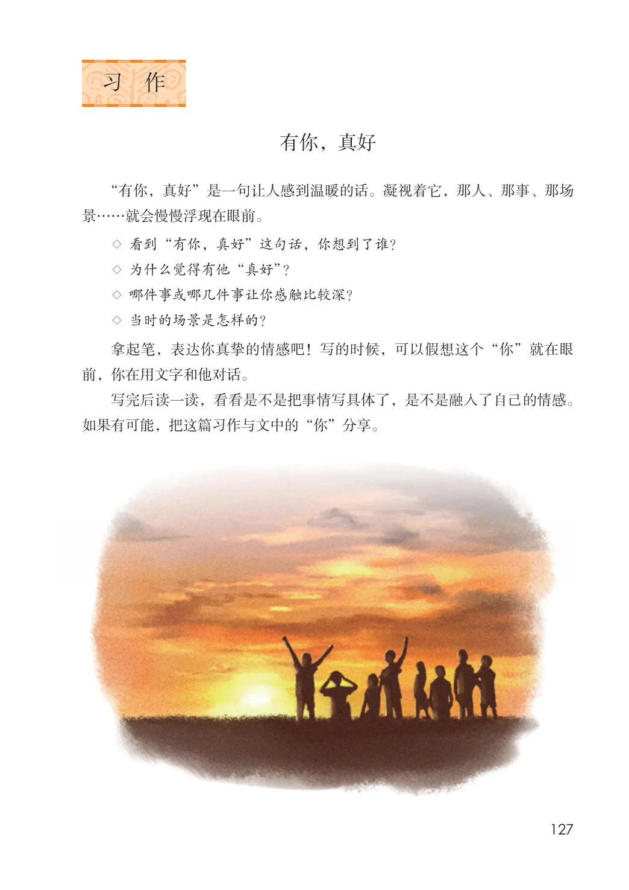
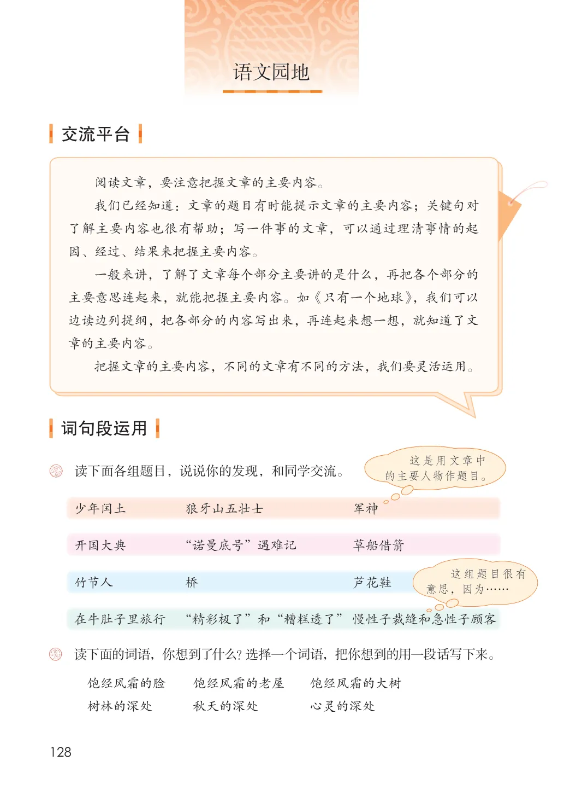
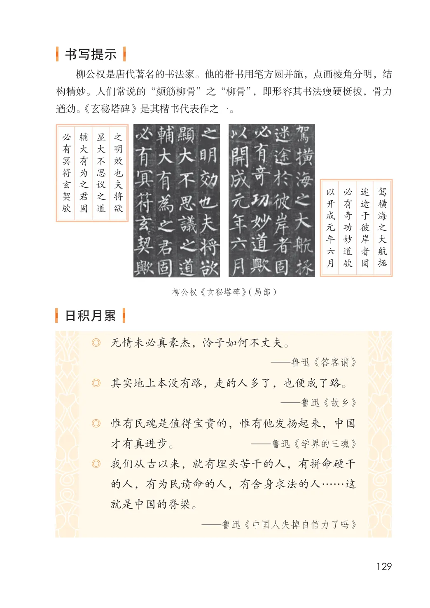
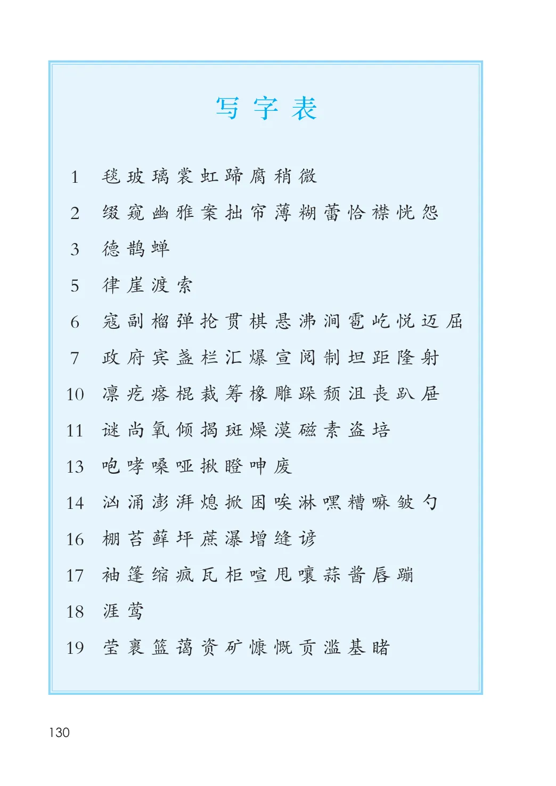
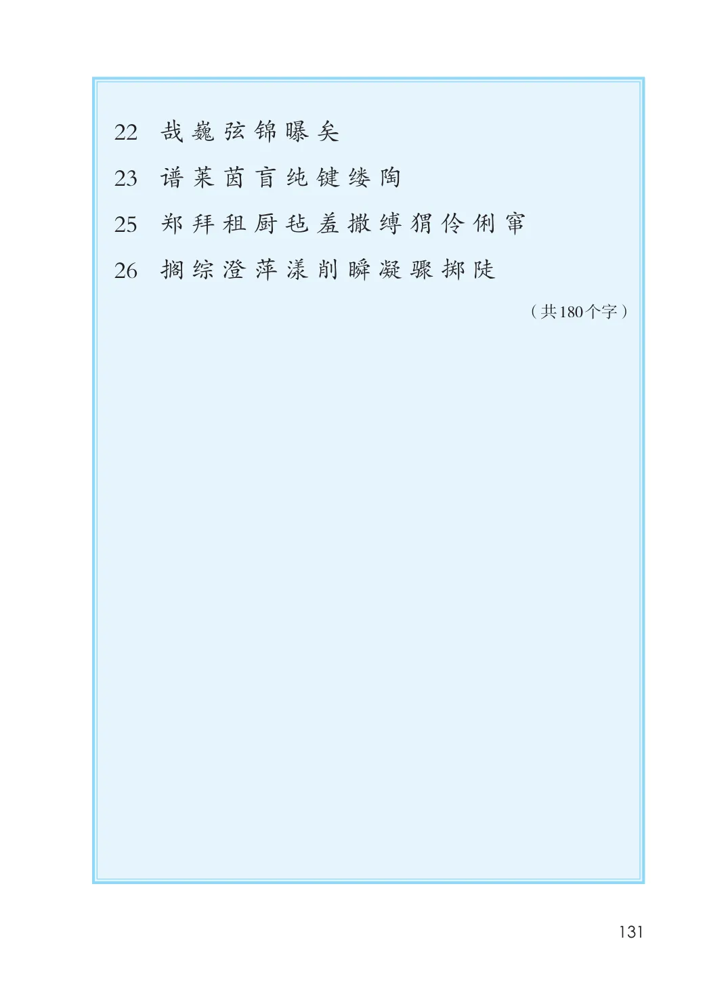
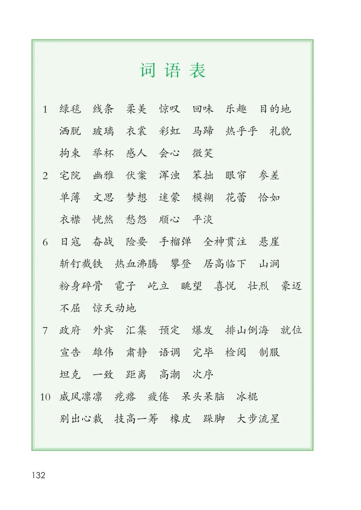
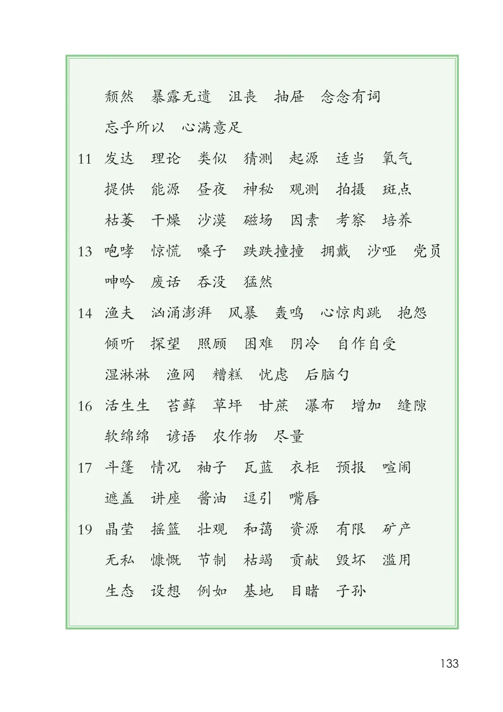
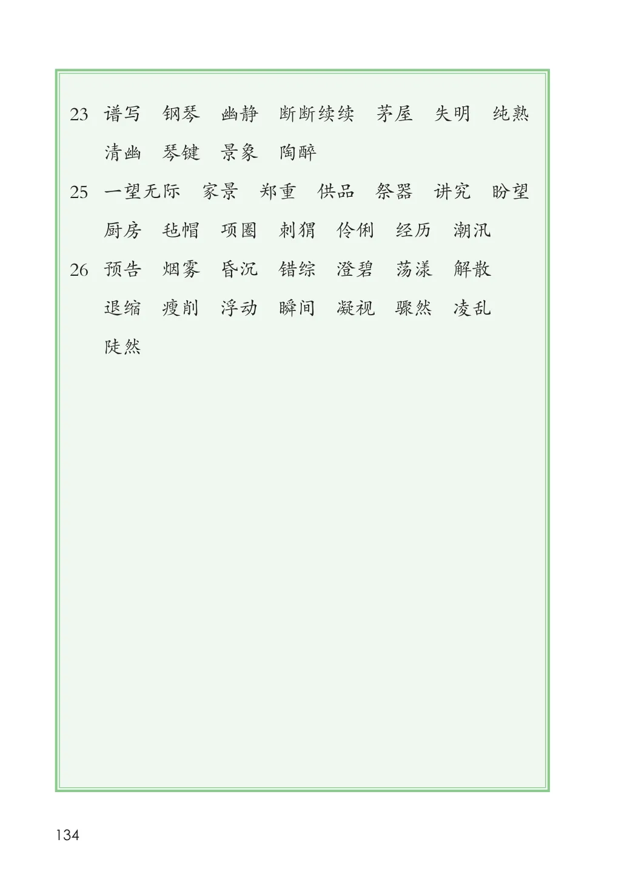
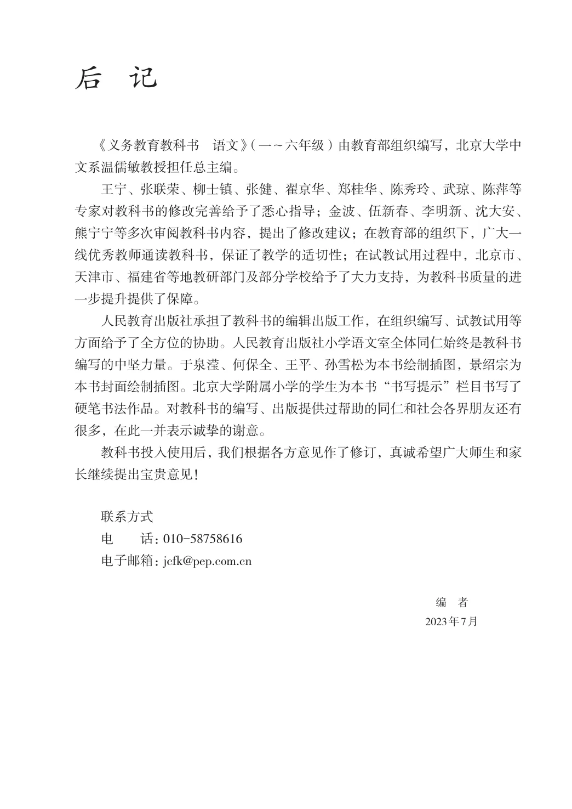
教材页 127文字内容
习 作
有你，真好
“有你，真好”是一句让人感到温暖的话。凝视着它，那人、那事、那场
景……就会慢慢浮现在眼前。
◇ 看到“有你，真好”这句话，你想到了谁？
◇ 为什么觉得有他“真好”？
◇ 哪件事或哪几件事让你感触比较深？
◇ 当时的场景是怎样的？
拿起笔，表达你真挚的情感吧！写的时候，可以假想这个“你”就在眼
前，你在用文字和他对话。
写完后读一读，看看是不是把事情写具体了，是不是融入了自己的情感。
如果有可能，把这篇习作与文中的“你”分享。
教材页 128文字内容
语文园地
交流平台
阅读文章，要注意把握文章的主要内容。
我们已经知道：文章的题目有时能提示文章的主要内容；关键句对
了解主要内容也很有帮助；写一件事的文章，可以通过理清事情的起
因、经过、结果来把握主要内容。
一般来讲，了解了文章每个部分主要讲的是什么，再把各个部分的
主要意思连起来，就能把握主要内容。如《只有一个地球》，我们可以
边读边列提纲，把各部分的内容写出来，再连起来想一想，就知道了文
章的主要内容。
把握文章的主要内容，不同的文章有不同的方法，我们要灵活运用。
词句段运用
这是用文章中的主要人物作题目。
读下面各组题目，说说你的发现，和同学交流。
少年闰土狼牙山五壮士军神
开国大典“诺曼底号”遇难记草船借箭
这组题目很有意思，因为……
竹节人桥芦花鞋
在牛肚子里旅行 “精彩极了”和“糟糕透了” 慢性子裁缝和急性子顾客
读下面的词语，你想到了什么？选择一个词语，把你想到的用一段话写下来。
饱经风霜的脸饱经风霜的老屋饱经风霜的大树
树林的深处秋天的深处心灵的深处
教材页 129文字内容
书写提示
柳公权是唐代著名的书法家。他的楷书用笔方圆并施，点画棱角分明，结
构精妙。人们常说的“颜筋柳骨”之“柳骨”，即形容其书法瘦硬挺拔，骨力
遒劲。《玄秘塔碑》是其楷书代表作之一。
之明效也夫将欲必有冥符玄契欤辅大有为之君固显大不思议之道
以开成元年六月迷途于彼岸者固必有奇功妙道欤驾横海之大航拯
柳公权《玄秘塔碑》（局部）
日积月累
◎ 无情未必真豪杰，怜子如何不丈夫。
—鲁迅《答客诮》
◎ 其实地上本没有路，走的人多了，也便成了路。
—鲁迅《故乡》
◎ 惟有民魂是值得宝贵的，惟有他发扬起来，中国
才有真进步。—鲁迅《学界的三魂》
◎ 我们从古以来，就有埋头苦干的人，有拼命硬干
的人，有为民请命的人，有舍身求法的人……这
就是中国的脊梁。
—鲁迅《中国人失掉自信力了吗》
教材页 130文字内容
写 字 表
毯玻璃裳虹蹄腐稍微
缀窥幽雅案拙帘薄糊蕾恰襟恍怨
德鹊蝉
律崖渡索
寇副榴弹抡贯棋悬沸涧雹屹悦迈屈
政府宾盏栏汇爆宣阅制坦距隆射
10 凛疙瘩棍裁筹橡雕跺颓沮丧趴屉
11 谜尚氧倾揭斑燥漠磁素盗培
13 咆哮嗓哑揪瞪呻废
14 汹涌澎湃熄掀困唉淋嘿糟嘛皱勺
16 棚苔藓坪蔗瀑增缝谚
17 袖篷缩疯瓦柜喧甩嚷蒜酱唇蹦
18 涯莺
19 莹裹篮蔼资矿慷慨贡滥基睹
教材页 131文字内容
22 哉巍弦锦曝矣
23 谱莱茵盲纯键缕陶
25 郑拜租厨毡羞撒缚猬伶俐窜
26 搁综澄萍漾削瞬凝骤掷陡
（共180个字）
教材页 132文字内容
词 语 表
1 绿毯 线条 柔美 惊叹 回味 乐趣 目的地
洒脱 玻璃 衣裳 彩虹 马蹄 热乎乎 礼貌
拘束 举杯 感人 会心 微笑
2 宅院 幽雅 伏案 浑浊 笨拙 眼帘 参差
单薄 文思 梦想 迷蒙 模糊 花蕾 恰如
衣襟 恍然 愁怨 顺心 平淡
6 日寇 奋战 险要 手榴弹 全神贯注 悬崖
斩钉截铁 热血沸腾 攀登 居高临下 山涧
粉身碎骨 雹子 屹立 眺望 喜悦 壮烈 豪迈
不屈 惊天动地
7 政府 外宾 汇集 预定 爆发 排山倒海 就位
宣告 雄伟 肃静 语调 完毕 检阅 制服
坦克 一致 距离 高潮 次序
10 威风凛凛 疙瘩 疲倦 呆头呆脑 冰棍
别出心裁 技高一筹 橡皮 跺脚 大步流星
教材页 133文字内容
颓然 暴露无遗 沮丧 抽屉 念念有词
忘乎所以 心满意足
11 发达 理论 类似 猜测 起源 适当 氧气
提供 能源 昼夜 神秘 观测 拍摄 斑点
枯萎 干燥 沙漠 磁场 因素 考察 培养
13 咆哮 惊慌 嗓子 跌跌撞撞 拥戴 沙哑 党员
呻吟 废话 吞没 猛然
14 渔夫 汹涌澎湃 风暴 轰鸣 心惊肉跳 抱怨
倾听 探望 照顾 困难 阴冷 自作自受
湿淋淋 渔网 糟糕 忧虑 后脑勺
16 活生生 苔藓 草坪 甘蔗 瀑布 增加 缝隙
软绵绵 谚语 农作物 尽量
17 斗篷 情况 袖子 瓦蓝 衣柜 预报 喧闹
遮盖 讲座 酱油 逗引 嘴唇
19 晶莹 摇篮 壮观 和蔼 资源 有限 矿产
无私 慷慨 节制 枯竭 贡献 毁坏 滥用
生态 设想 例如 基地 目睹 子孙
教材页 134文字内容
23 谱写 钢琴 幽静 断断续续 茅屋 失明 纯熟
清幽 琴键 景象 陶醉
25 一望无际 家景 郑重 供品 祭器 讲究 盼望
厨房 毡帽 项圈 刺猬 伶俐 经历 潮汛
26 预告 烟雾 昏沉 错综 澄碧 荡漾 解散
退缩 瘦削 浮动 瞬间 凝视 骤然 凌乱
陡然
教材页 135文字内容
后 记
《义务教育教科书 语文》（一〜六年级）由教育部组织编写，北京大学中
文系温儒敏教授担任总主编。
王宁、张联荣、柳士镇、张健、翟京华、郑桂华、陈秀玲、武琼、陈萍等
专家对教科书的修改完善给予了悉心指导；金波、伍新春、李明新、沈大安、
熊宁宁等多次审阅教科书内容，提出了修改建议；在教育部的组织下，广大一
线优秀教师通读教科书，保证了教学的适切性；在试教试用过程中，北京市、
天津市、福建省等地教研部门及部分学校给予了大力支持，为教科书质量的进
一步提升提供了保障。
人民教育出版社承担了教科书的编辑出版工作，在组织编写、试教试用等
方面给予了全方位的协助。人民教育出版社小学语文室全体同仁始终是教科书
编写的中坚力量。于泉滢、何保全、王平、孙雪松为本书绘制插图，景绍宗为
本书封面绘制插图。北京大学附属小学的学生为本书“书写提示”栏目书写了
硬笔书法作品。对教科书的编写、出版提供过帮助的同仁和社会各界朋友还有
很多，在此一并表示诚挚的谢意。
教科书投入使用后， 我们根据各方意见作了修订，真诚希望广大师生和家
长继续提出宝贵意见！
联系方式
电 话：010-58758616
电子邮箱：jcfk@pep.com.cn
编 者
2023年7月
教材页 137文字内容
®YIWU JIAOYU JIAOKESHU
六年级 上册语文
绿色印刷产品绿色印刷产品